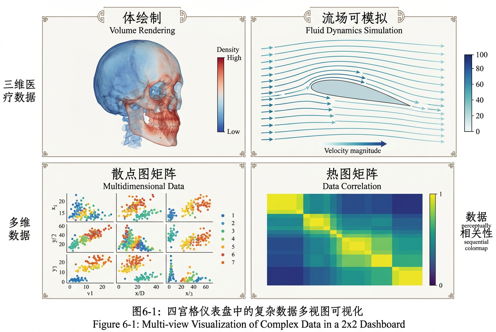

本讲义基于 Steve Marschner & Peter Shirley 所著《虎书》（Fundamentals of Computer Graphics）第5版第23章（p.663-697）可视化。
科学/信息可视化的全谱——Munzner 嵌套模型、视觉编码（Bertin/Cleveland-McGill 精度排名）、小倍数/联动/焦点上下文、PCA/t-SNE 降维、体渲染流场可视化。
本版插画采用 Guizang 材质插画风格重新绘制。
可视化致力于通过互动式视觉表达，让用户洞察复杂信息。图 23.1 展示了一个用纯文本列表来跟踪"无穷"和"悖论"等哲学话题之间关系的困境——阅读线性文本时，发现话题之间的隐含联系需要大量认知努力。

图 23.2 用节点-链接图展示了同一个数据集的外部视觉表征：每个话题是一个节点，话题间的联系用线段直接连接。我们只需移动视线追踪连线，这是一种快速的低层操作（认知负荷极小），因此高层级的邻域关系识别变得可能。我们称这种数据集属性到视觉表达的映射为视觉编码（Visual Encoding）。可视化的核心问题之一，就是在巨大的可能视觉表达空间中、在考虑人类感知系统特性、给定数据集和待完成任务的前提下，选择合适的编码。
人类通过静态图像传达意义的历史非常悠久，可以追溯到三万多年前已知最古老的洞穴壁画。今天我们继续以视觉方式交流——从餐巾纸背面的速写到广告中精良的平面设计。数千年来，制图学家一直在研究如何制作能表征我们周围世界某些方面的地图。而对抽象、非空间数据集的第一个视觉表达，由 William Playfair 在 18 世纪创造。
虽然我们拥有创造运动图像的能力已有一百五十多年，但交互式创造动态图像却是更晚近的事——只有快速计算机图形硬件和算法的广泛普及才使之成为可能。小数据集的静态可视化可以手工完成，但计算机图形学使得大规模数据集的交互式可视化成为现实。
想一想：从三万年前的洞穴壁画到 18 世纪的统计图表，再到今天的 GPU 驱动实时可视化——为什么"把数据画出来"这件事，本质并没有变，但尺度却发生了革命性变化？
现代计算机可视化研究可以追溯到三个相互交织但各有侧重的学术传统：科学可视化（Scientific Visualization, SciVis）、信息可视化（Information Visualization, InfoVis）和可视分析（Visual Analytics, VAST）。理解它们的历史有助于把握整个领域的知识版图。
1987 年，美国国家科学基金会（NSF）发布了一份里程碑式的报告——《Visualization in Scientific Computing》（科学计算中的可视化），由 Bruce H. McCormick、Thomas A. DeFanti 和 Maxine D. Brown 主编。这份报告被普遍视为"科学可视化"这一学科的开端。报告的核心论点简洁而有力：超级计算机正在产生前所未有的大量数值数据（流体动力学仿真、气象模型、分子动力学），但人类科学家无法直接理解这些数字——必须通过视觉手段将数值转化为图像，才能在数据中发现模式、验证假设、交流发现。报告提出了一个著名的口号："将计算转化为洞察"（Turning Computation into Insight）。
科学可视化的研究对象是固有空间数据（Inherently Spatial Data）——即数据本身就带有二或三维空间坐标。典型例子包括：CT/MRI 医学影像（人体内部的密度场）、计算流体动力学（CFD）仿真（飞机机翼周围的速度场和压力场）、气象数据（大气温度、气压的三维场）、分子动力学模拟（原子在三维空间中的位置和运动）。科学可视化的核心技术包括体渲染（Volume Rendering）、等值面提取（Isosurface Extraction，如 Marching Cubes 算法，第 12 章已讨论）、流线生成（Streamline Generation）和粒子追踪（Particle Tracing）。
接下来的十年见证了科学可视化领域的爆炸性增长。1990 年，首届 IEEE Visualization Conference（IEEE Vis）召开。开源工具包 VTK（Visualization Toolkit）于 1993 年发布，至今仍是科学可视化的事实标准。1990 年代中期，GPU 的快速发展使得交互式体渲染成为可能。
与科学可视化不同，信息可视化关注的是抽象、非空间数据（Abstract, Nonspatial Data）——数据本身没有内在的空间坐标，设计师必须人为地将数据维度映射到空间位置和其他视觉通道。典型的数据类型包括：表格数据（如股票行情、人口统计）、层次数据（如文件系统、组织架构图）、网络/图数据（如社交网络、引文网络）、文本数据（如文档集合、邮件归档）和多维数据（如高维统计观测）。
信息可视化的学术起源可以追溯到更早的统计图形传统。William Playfair 在 1786 年发明了柱状图和折线图，在 1801 年发明了饼图——这是人类最早的抽象数据可视化形式。Florence Nightingale 在 1858 年使用极区图（玫瑰图）展示克里米亚战争中英军士兵的死亡原因，直接推动了医疗改革。Charles Joseph Minard 在 1869 年绘制的拿破仑俄国远征图（将在 23.8 节详细分析）被 Edward Tufte 誉为"有史以来最伟大的统计图表"。这些先驱工作都共享一个核心思想：将抽象的数字关系转化为空间-视觉关系，从而利用人类视觉系统快速检测模式的能力。
信息可视化作为计算学科的确立发生在 1990 年代后期。1995 年，IEEE 信息可视化研讨会（InfoVis Symposium）首次召开。1996 年，Ben Shneiderman 在论文《The Eyes Have It》中提出了著名的"信息搜寻箴言"（Visual Information Seeking Mantra）："先概览，再缩放与过滤，按需提供细节"（Overview first, zoom and filter, then details-on-demand），为交互式信息可视化系统建立了设计框架。1999 年，Stuart Card、Jock Mackinlay 和 Ben Shneiderman 合编的《Readings in Information Visualization: Using Vision to Think》出版，系统化了该领域的研究成果。
信息可视化的标志性技术包括：Treemap（树图，Ben Shneiderman, 1992）、平行坐标（Parallel Coordinates, Alfred Inselberg, 1985）、散点图矩阵（Scatterplot Matrix）、力导向图布局（Force-Directed Layout）和 Fisheye 视图（George Furnas, 1986）。
进入 21 世纪，研究者和实践者逐渐认识到，将科学可视化和信息可视化截然分开的二分法已不再适应当前需求——现实世界的问题往往同时涉及空间数据和非空间数据，且需要支持的不仅是被动的"看"，还包含主动的分析推理。2005 年，由 James J. Thomas 和 Kristin A. Cook 主编的《Illuminating the Path: The Research and Development Agenda for Visual Analytics》正式提出了可视分析学（Visual Analytics）的概念。其定义为："通过交互式视觉界面促进分析推理的科学"（the science of analytical reasoning facilitated by interactive visual interfaces）。
2006 年，首届 IEEE VAST（Visual Analytics Science and Technology）会议召开。可视分析的核心思想是将人类的判断和创造力与机器的计算能力紧密耦合——不是让机器完全替代人类做决策（那将消除可视化的必要性），也不是让人类纯手工浏览数据（这在数据规模面前不可行），而是设计一个"人机环路"（Human-in-the-Loop），让自动分析算法筛选、排序和聚合候选模式，而人类则验证、解释和决定。这代表了可视化研究范式的第三次转变：从"看"（SciVis）到"交互"（InfoVis）再到"推理"（VAST）。
| 年份 | 事件 | 影响 |
|---|---|---|
| 1786 | Playfair 发明柱状图/折线图 | 人类首次用空间编码抽象数据 |
| 1854 | John Snow 绘制霍乱地图 | 空间流行病学可视化奠基 |
| 1869 | Minard 绘制拿破仑行军图 | 多维数据叙事可视化的登峰造极 |
| 1967 | Jacques Bertin 出版《图形符号学》 | 视觉变量的系统理论 |
| 1977 | John Tukey 出版《探索性数据分析》 | EDA 方法学——用可视化探索而非验证 |
| 1987 | NSF 报告《Visualization in Scientific Computing》 | 科学可视化学科正式确立 |
| 1992 | Shneiderman 发明 TreeMap | 层次数据可视化突破 |
| 1996 | Shneiderman 提出 InfoVis Mantra | 信息可视化交互范式确立 |
| 2005 | 《Illuminating the Path》出版 | 可视分析学科正式提出 |
| 2010s | D3.js / Vega / Tableau 普及 | 可视化从研究走向大众工具 |
在讨论可视化设计之前，有必要引入一个深刻影响了整个领域的思想：探索性数据分析（Exploratory Data Analysis, EDA），由统计学家 John W. Tukey 在其 1977 年的经典著作《Exploratory Data Analysis》中系统阐述。Tukey 区分了两种数据分析的哲学：
Tukey 提出了几项至今仍广泛使用的 EDA 工具：
x³ → x² → x¹ → √x → log(x) → -1/√x → -1/x → -1/x² → -1/x³。EDA 对可视化领域的深远影响在于，它重新定位了可视化的角色——可视化不再只是研究结束时展示结果的"漂亮图片"，而是研究过程中不可或缺的"思考工具"。这一思想直接影响了后来所有可视化系统的交互设计：系统必须支持灵活、快速、迭代的探索，而不是一次性的静态报告。
生活类比：验证性分析（CDA）像是在法庭上向陪审团出示证据——你需要事先知道要证明什么，每一步都严格按程序来。探索性分析（EDA）更像是侦探在现场搜查——你不知道犯罪工具在哪里，但你逐个房间观察、推理、排除可能性。一个好的可视化工具必须同时支持这两种模式：侦探式的自由探索和研究完成后的报告展示。
在设计可视化系统时，我们必须考虑三种不同的限制：计算能力（Computational Capacity）、人类感知与认知能力（Human Perceptual and Cognitive Capacity），以及显示能力（Display Capacity）。
与任何计算机图形学应用一样，计算时间和内存是有限资源，我们经常面临硬性约束。如果可视化系统需要提供交互式响应，它必须使用能在几分之一秒内运行的算法，而非几分钟或几小时。
在人的方面，记忆和注意力必须被视为有限资源。人类记忆在长时回忆和短时工作记忆方面都是出了名的受限。在 23.4 节中，我们将讨论执行视觉场大规模并行处理的低层视觉注意机制的威力与局限。我们在视觉工作记忆中内部存储的信息少得出奇，这使我们容易受到变化盲视（Change Blindness）的影响——当我们关注视野中的其他内容时，即使非常大的变化也不会被察觉。此外，警觉性（Vigilance）也是一种高度有限的资源：我们执行视觉搜索任务的能力退化很快，数小时后的表现比最初几分钟差得多。
显示能力是需要考虑的第三种限制。可视化设计师常常"用尽像素"——屏幕的分辨率不足以同时显示所有所需的信息。某一帧的信息密度（Information Density）衡量了已编码信息量相对于未使用空间的比例。在尽可能多地一次性显示（以减少导航和探索的需要）的好处，与一次性显示过多导致用户被视觉混乱压倒的代价之间，存在着权衡。
可视化设计的许多方面由我们需要考察的数据类型所驱动。例如，它是一张数字表格、一组项目间的关系，还是固有的空间数据（如地球表面的某个位置或一组文档）？
我们先从一张数据表开始。将行称为数据项（Items），将列称为维度（Dimensions），也称为属性（Attributes）。例如，行可以代表人，列可以是姓名、年龄、身高、衬衫尺码和喜欢的水果。
我们区分三种类型的维度：定量（Quantitative）、有序（Ordered）和类别（Categorical）。定量数据（如年龄或身高）是数值型的，我们可以对其做算术运算——例如 68 英寸减 42 英寸等于 26 英寸。对于有序数据（如衬衫尺码），我们不能做完整的算术，但存在良好定义的排序——例如"大号减小号"不是有意义的概念，但我们知道"中号"落在"小号"和"大号"之间。类别数据（如喜欢的水果或姓名）没有隐式排序，我们只能区分两个事物是相同（苹果）还是不同（苹果 vs. 香蕉）。
关系数据（Relational Data），即图（Graphs），是另一种数据类型，节点通过链接相连接。树是图的一个特例，通常用于层次数据（Hierarchical Data）。节点和边都可以有附带属性。不幸的是，在可视化领域"graph"一词存在重载：我们在这里讨论的节点-链接图（沿用图论和图形绘制领域的术语），也可以称为网络。在统计图形领域，"graph"通常指图表，如图 23.10 中所示的时间序列数据的折线图。
有些数据是固有的空间数据（Inherently Spatial Data），例如地理位置，或三维空间位置上的测量场（如医生用来查看人体内部结构的 MRI 或 CT 扫描）。与空间中每一点相关联的信息可能是标量量的无序集合、索引向量或张量。与之相对，非空间数据（Nonspatial Data）可以使用空间位置进行视觉编码，但该编码是由设计师选择的，而非隐含在数据集本身的语义中。这个选择是可视化设计中最核心、最困难的问题之一。
想一想：如果给你 1000 个人的姓名、年龄、身高、体重和喜欢的颜色，你会怎么把它们"画"出来？年龄和身高很自然地可以映射到 x 和 y 轴（定量→位置），但"喜欢的颜色"呢？为什么这比前面两个维度更难决定？
需要视觉编码的数据维度数（Number of Data Dimensions）是可视化设计问题中最基本的方面之一。适用于只有几列的低维数据集（Low-Dimensional Dataset）的技术，对于有几十或几百列的高维数据集（Very High-Dimensional Dataset）通常会失效。一个数据维度可能具有层次结构，例如对于时间序列数据集，多个时间尺度上存在有趣的模式。
数据项数量（Number of Data Items）也同样重要：在几百个数据项上表现良好的可视化，通常在数百万个数据项上无法扩展。在某些情况下，困难完全是算法性的——计算将花费太长时间；在另一些情况下，它甚至是更深层的感知问题——即使有一个瞬时算法也无法解决，因为视觉混乱（Visual Clutter）使表达对用户来说不可用。一个维度内可能的值域范围（Range of Possible Values）也可能很重要。
数据常常在可视化管道中从一种类型转换到另一种类型，以求解领域问题。例如，原始数据维度可能由定量数据组成——表示温度的浮点数。对于某些任务（如查找局部天气模式中的异常），原始数据可以直接使用。对于另一个任务（如决定水温是否适合淋浴），数据可能被转换为有序维度：烫、温、冷。在这种变换中，大部分细节被聚合掉了。第三个例子中，在烤面包时，一个更加有损的转换——转换为类别维度——可能就足够了：烤焦了或没烤焦。
将数据转换为派生维度（Derived Dimensions）而不只是以原始形式对数据进行视觉编码，是一个强大的理念。在图 23.10 中，原始数据是一组有序的时间序列曲线。变换方法是对数据进行聚类，将需要视觉编码的信息量减少到少数几条高度有意义的曲线。
生活类比：你把一整年的银行流水（数千笔交易）交给会计师时，他不会逐笔查阅，而是先按类别汇总（餐饮、交通、购物），再按月份分组。这个"原始数据→分类汇总"的过程，正是数据变换与派生维度的本质——在保持关键模式的同时，把信息压缩到人脑可以处理的体量。
除了一般性的定量/有序/类别分类之外，科学计算领域还有一种互补的数据分类法，基于物理量在空间中每一点的数学性质。这种分类直接驱动了科学可视化中算法和技术的选择。我们以空间中每一点关联的数据类型来区分：
| 数据类别 | 定义 | 在 d 维空间每个点上的数据结构 | 典型实例 | 核心可视化方法 |
|---|---|---|---|---|
| 标量场（Scalar Field） | 空间中每一点仅关联一个数值 | f: Rᵈ → R（单值函数） | 温度场（气象）、密度场（CT/MRI 扫描的 Hounsfield 单位）、海拔高度（地形 DEM）、压力场（CFD 仿真）、浓度场（污染物扩散） | 颜色映射（Color Mapping）、等值线/等值面（Contour/Isosurface）、体渲染（Volume Rendering）、高度场（Height Field） |
| 矢量场（Vector Field） | 空间中每一点关联一个 d 维向量（具有大小和方向） | v: Rᵈ → Rᵈ（向量值函数） 对于 3D 空间：v(x,y,z) = (vₓ, v_y, v_z) |
风速场（气象）、血流速度（医学超声）、流体速度场（CFD 中的 Navier-Stokes 仿真输出）、电磁场（物理仿真）、洋流（海洋学） | 箭头（Arrow/Glyph）、流线（Streamline）、质点追踪（Particle Tracing）、线积分卷积（LIC）、纹理平流（Texture Advection） |
| 张量场（Tensor Field） | 空间中每一点关联一个张量（二阶以上，即矩阵值函数） | T: Rᵈ → Rᵈˣᵈ（矩阵值函数） T= [T₁₁ T₁₂; T₂₁ T₂₂]（2D）: 对称时 Tᵢⱼ = Tⱼᵢ（如应力张量） |
扩散张量成像 DTI（神经科学——测量水分子在大脑白质中的各向异性扩散）、应力/应变张量（结构力学）、惯性张量（刚体动力学）、渗透率张量（油藏工程） | 椭球雕纹（Ellipsoid Glyph）、超二次曲面（Superquadrics）、特征向量场（Eigenvector Field）、纤维追踪（Fiber Tracking, DTI 特有） |
| 多维数据（Multidimensional Data） | 每个观测点有多个（通常 4 个以上）不相关的属性，数据可能没有固有的空间位置 | 每行是一个 d 维向量 x ∈ Rᵈ 每列是一个属性维度 |
人口普查数据（年龄/收入/教育/职业/…）、高维传感器读数、金融指标、基因表达矩阵 | 散点图矩阵（SPLOM）、平行坐标（Parallel Coordinates）、降维投影（PCA/t-SNE/MDS → 散点图）、雷达图（Radar Chart） |
| 时变数据（Time-Varying Data） | 上述任何类型的数据随时间演变——即多了一个时间维度 t | f(x,y,z,t) / v(x,y,z,t) / T(x,y,z,t) | 天气预报动画（时变标量/矢量场）、心脏搏动仿真（时变矢量场）、股票价格历史（时变多维数据）、交通流量时间序列、分子动力学轨迹 | 动画/时序播放、时空图（Space-Time Cube）、小倍数时间序列、平行时间线、等时面（Isosurface + 颜色动画编码时间） |
值得强调的是：标量场的可视化是所有这些类别的基础，因为矢量场和张量场常常可以"降维"为标量场来处理。例如，在可视化一个流体速度场时，我们可以先计算每个点的速度幅值 |v| = √(vₓ² + v_y² + v_z²)（一个标量场），用颜色映射显示速度的大小，再叠加流线显示速度的方向。类似地，张量场可以通过追踪其特征向量退化为一个矢量场，或者通过计算标量不变量（如迹、行列式）退化为标量场。
想一想：为什么 CT 扫描数据是标量场（每个体素只有一个 Hounsfield 数值），但 MRI 的扩散张量成像（DTI）却是张量场？想象一下——CT 测量的是 X 射线穿过组织时的衰减程度（只有一个方向），而 DTI 测量的是水分子沿不同方向扩散的难易程度——在大脑白质纤维束中，沿纤维方向的扩散远大于垂直方向的扩散，这个"方向性"必须用张量来刻画。
标量场是科学可视化中最基础、最常见的输入数据类型。一个 3D 标量场 f(x,y,z) 典型地表现为一个规则网格上的数值数组（如 CT 扫描输出一个 512×512×N 的体素网格，每个体素存储一个 Hounsfield 单位的 16 位整数）。以下是四种核心的标量场可视化策略：
将标量值 f(x,y,z) 通过色图（Colormap）映射为颜色，然后显示为二维切片图像或三维表面纹理。这是医院 CT 阅片中最常见的策略——医生查看一个个轴向/冠状/矢状切片，每个像素的颜色由该位置的 Hounsfield 值决定。颜色映射的核心设计问题是色图的选择（参见 23.4.2 节），但其独特的问题是，必须选择一个或多个"切片平面"来观察三维数据——这等同于丢弃了第三维的信息，因此通常需要同时查看多个正交切片以建立三维结构的心理模型。
颜色映射: C(x,y,z) = Colormap( f(x,y,z) ) 常用色图选择: • 灰度色图：C(s) = (s, s, s)，最中性，但感知动态范围有限（≈ 100 个级别） • 感知线性色图（如 Viridis/Inferno/Magma/Plasma）：亮度单调，对色盲友好 • 发散色图（如 Cool-Warm）：中点分叉，适合有临界值的标量场 • 分割色图：语义分段，如海拔图：蓝色=海洋→绿色=低地→棕色=高原→白色=雪山
寻找标量场中所有满足 f(x,y,z) = c 的点，这些点形成了一条线（2D 标量场中称为等值线 Contour Line）或一个曲面（3D 标量场中称为等值面 Isosurface）。等值线是地形图中连接相同海拔高度的线；等值面在医学可视化中用于提取特定组织（如骨骼在 ~1000 HU 处的等值面、皮肤在 ~200 HU 处的等值面）。
等值面提取的核心算法是第 12 章讨论过的Marching Cubes（行进立方体）算法。其原理是遍历体素网格的每个立方体单元，查看其 8 个顶点的标量值——如果部分顶点的值大于等值面阈值 c 而其他顶点小于 c，则该立方体与等值面相交。通过查找表确定该单元内等值面的三角形近似，最终输出一个三角形网格。Marching Cubes 的关键决策在于其 2⁸ = 256 种顶点符号组合的查找表设计。
Marching Cubes 核心逻辑（伪代码）:
for each voxel cell (i,j,k):
for each of the 8 vertices:
sign[vert] = (f(vertex) > isovalue) ? 1 : 0
case_idx = sign[0] | (sign[1]<<1) | ... | (sign[7]<<7) // 8-bit index
if case_idx in {0, 255}: continue // 全在内部或全在外部
for each edge in marching_cubes_table[case_idx]:
interpolate vertex position along edge where f = isovalue
emit triangle
与等值面提取"找一个曲面"的间接方法不同，直接体渲染（Direct Volume Rendering, DVR）将整个三维标量场视为一个半透明的发光介质，通过沿每条视线的数值积分生成二维图像。其核心组件是传递函数（Transfer Function）T(s) = (R,G,B,α)，将标量值 s 映射为颜色和透明度。体渲染的细节将在 23.8.5 节深入展开。
当 2D 标量场 f(x,y) 具有自然的"高度"语义时（如地形高程数据 DEM），可以将标量值直接映射到 z 轴形成三维表面：
高度场: z = f(x,y)，渲染为三角网格表面
每个顶点 (x, y, f(x,y))
颜色可用另外的色图编码（如坡度、坡向或被覆类型）
这种表示有时被称为 "2.5D"——因其虽在 3D 空间中绘制，但每 (x,y) 对应唯一的 z 值
（即表面不折叠或自遮挡），本质上是 2D 函数的 3D 图形。
高度场在可视化中的一个重要优势是：它自然地保留了标量场的拓扑结构——山脊、山谷、洼地和峰顶等特征可以直接被观众识别。与纯粹的颜色映射相比，高度场通过人的深度感知（立体视觉、运动视差）和光照（阴影提供额外的凹凸感知）提供了更强的信息通道。然而，当 f(x,y) 的变化非常平缓时，颜色映射可能比高度变化更易察觉。
想一想：如果给你一个 512×512 的温度分布图 f(x,y)，你可以用颜色映射（把温度值映射到红色→蓝色渐变）来显示，也可以画成高度场（温度高的地方"隆起"）。什么时候你会选择颜色映射而非高度场？提示：考虑"遮挡"问题——当一个很高的山峰挡住了后面的山谷时，山谷的信息就丢失了。
与标量场每个点只有一个数值不同，矢量场在每个空间点关联一个方向向量。这使得矢量场的可视化比标量场复杂得多，因为视觉通道的内禀维度是有限的。一个 3D 矢量场在每一点携带 3 个标量值（分量 vₓ, v_y, v_z），而人类视觉最多能在单个视图中有效地消化约 5-7 个独立维度。矢量场可视化的核心挑战是在有限的视觉通道中传达方向信息，同时不丢失空间的连续性。
最直接的矢量场可视化方法是在空间中规则采样点放置小箭头（Arrow Glyphs），箭头的方向表示矢量的方向，箭头的长度或颜色表示矢量的幅值。这种方法简单直观，但有严重局限：
流线（Streamline）是矢量化可视化的第二个基本方法。流线是一条曲线，其上每一点的切线方向与该点矢量场的瞬时方向一致。从数学上看，流线是常微分方程（ODE）的积分曲线：
流线的常微分方程（ODE）定义:
给定种子点 x₀ 和矢量场 v(x)，流线 s(t) 满足：
ds/dt = v(s(t))，初始条件 s(0) = x₀
数值积分（显式欧拉法，步长 h）：
s_{k+1} = s_k + h · v(s_k) // h 过大会发散，h 过小则计算成本高
更稳健的方法——四阶 Runge-Kutta（RK4）：
k₁ = h · v(s_k)
k₂ = h · v(s_k + k₁/2)
k₃ = h · v(s_k + k₂/2)
k₄ = h · v(s_k + k₃)
s_{k+1} = s_k + (k₁ + 2k₂ + 2k₃ + k₄)/6
终止条件：||v(s_k)|| < ε（到达临界点/停滞区）、s_k 超出域边界、或达到最大步数。
流线的质量和信息量高度依赖于种子点布局（Seed Placement）策略。最简单的策略是在规则网格上放置种子点，但这会导致在流动均匀的区域过度采样（密集冗余流线）、在流动复杂的区域欠采样（关键旋涡结构被遗漏）。更智能的策略使用基于矢量场约束的种子放置——如在临界点周围集中放置、或使用等距策略确保流线间距均匀。流线的另一个局限是它们只在离散的种子点采样连续场——两个相邻流线之间的区域并未可视化，可能遗漏重要的流特征（如分叉）。
线积分卷积（Line Integral Convolution, LIC）是 Brian Cabral 和 Leith (Casey) Leedom 在 1993 年提出的突破性方法，通过在矢量场方向上卷积输入噪声纹理，生成每一像素都具有方向纹理的图像——从而以稠密、连续的方式可视化整个矢量场。LIC 的完整算法流程将在 23.8.2 节详细展开。
LIC 的核心思想（简化）：
输入：白噪声纹理 N(x,y)、二维矢量场 v(x,y) = (vₓ, v_y)
输出：LIC 纹理 L(x,y)
对每个像素 (x,y)：
L(x,y) = ∫_{-L}^{L} k(s) · N( x(s), y(s) ) ds
其中 (x(s), y(s)) 是从 (x,y) 出发、沿矢量场 v 正向（s>0）和
反向（s<0）追踪得到的两条流线上的参数点。k(s) 是卷积核
（如盒形核或高斯核），L 是卷积半长度。
直观理解：在噪声纹理的每个像素上，沿流线方向"涂抹"噪声像素的值，
抹去的方向与流场方向一致，形成方向纹理。在 LIC 图像中，方向一致的
区域（如层流）产生长而平滑的纹理线；方向复杂的区域（如涡流）产
生卷曲的纹理图案。
对于时变矢量场 v(x,t)（如非稳态 CFD 仿真），流线的概念扩展为迹线（Pathline）——一个无质量粒子在时变场中实际经历的轨迹。迹线满足：
迹线 ODE:
dp/dt = v(p(t), t)，初始条件 p(t₀) = x₀
注意：流线（Streamline）描述的是单个时刻的瞬时方向模式，
迹线（Pathline）描述的是粒子随时间的实际运动轨迹。
对于定常场（v 不依赖 t），两者重合。
质点追踪可视化：在矢量场中播撒一组（通常是成千上万个）虚拟粒子，
每个粒子按迹线 ODE 运动，粒子的颜色可编码其年龄、速度或其他属性。
基于 GPU 的现代实现可以实时追踪数十万粒子。
张量场比矢量场更复杂：在每一点有 d×d 个值（对对称张量为 d(d+1)/2 个独立分量）。最常见的张量场可视化策略是椭球雕纹（Ellipsoid Glyph）——在每个采样点放置一个椭球，其三个主轴方向与张量的三个特征向量对齐，主轴长度与对应的特征值成正比。在扩散张量成像（DTI）中，拉长的椭球（一个特征值远大于其他两个）指示高度方向性的白质纤维束；球形的椭球（三个特征值相近）指示各向同性的灰质或脑脊液。另一种策略是追踪主特征向量场（最大特征值对应的特征向量场），形成纤维追踪（Fiber Tracking）——连接特征向量方向形成空间曲线，即假想的神经纤维束路径。
对称 3×3 张量的特征分解: T eᵢ = λᵢ eᵢ，i = 1,2,3，λ₁ ≥ λ₂ ≥ λ₃ 可视化雕纹： • 椭球主轴 = e₁, e₂, e₃（特征向量方向） • 椭球半轴长度 = |λ₁|, |λ₂|, |λ₃|（特征值幅值） DTI 常用的各向异性度量（Fractional Anisotropy, FA）： FA = √(3/2) · √((λ₁-λ̄)² + (λ₂-λ̄)² + (λ₃-λ̄)²) / √(λ₁² + λ₂² + λ₃²) 其中 λ̄ = (λ₁+λ₂+λ₃)/3 FA ∈ [0,1]：0 = 完全各向同性（球状），1 = 完全各向异性（线状）
生活类比：矢量场可视化就像观察河面的漂浮物——每个小树枝的运动方向告诉你水流的方向。流线方法相当于追踪一根特定树枝的完整轨迹，LIC 相当于在河面上撒一层亮粉，使所有点的流动方向同时可见。张量场则更像是观察一个扁气球在河流中——球不仅被推着走，还会被拉伸变形（描述变形的数学量需要张量，不能用单一向量表达）。
Tamara Munzner 提出了一种嵌套的四层模型（Nested Four-Layer Model）来描述可视化设计过程。最外层表征领域问题，内层逐步深入数据/任务抽象、视觉编码与交互技术，以及实现这些技术的算法。
从领域问题出发，设计者将其分析为通用可视化抽象；这些抽象问题可能来自非常不同的领域，但可以映射到相同的可视化抽象。这些通用操作包括排序、过滤、表征趋势与分布、发现异常与离群值、发现相关性。它们还包括特定于某一数据类型的操作，例如对图或树形式的关系数据沿路径行走。
这个抽象步骤通常涉及从原始数据到派生维度的数据变换。这些派生维度通常与原始数据属于不同类型：图可能被转换成树；表格数据可能通过使用阈值来决定是否存在链接，从而转换成图；等等。
想一想：如果你正在设计一个电影推荐系统的可视化工具，用户想知道"为什么这部电影被推荐给我？"——这属于 Munzner 四层模型中的哪一层？需要什么类型的任务抽象？
一旦选定了抽象，下一层是设计适当的视觉编码和交互技术。23.4 节介绍视觉编码原则，23.5 节讨论交互原则，23.6 和 23.7 两节介绍考虑这些原则的技术。遗憾的是，可视化算法的详细讨论超出了本章范围。
四个层次各有不同的验证要求：
第一层旨在确定问题是否被正确表征——是否真的存在一组目标用户执行特定的任务，他们是否确实能从所提出的工具中受益？测试假设和猜想的直接方法是观察或访谈（Observe or Interview）目标用户群体，确保可视化设计师充分理解他们的任务。只有在工具被构建和部署后才能完成的测量，是监控其在该社区中的采纳率（Adoption Rate）——当然，影响采纳的除了效用之外还有许多其他因素。
第二层用来确定从领域问题到特定数据类型上的操作的抽象是否确实解决了所求问题。在原型或最终工具部署后，可以进行现场研究（Field Study）观察目标受众是否以及如何使用它。此外，系统产生的图像可从定性和定量两方面进行分析。
第三层的目的是验证设计师选择的视觉编码和交互技术是否能有效地向用户传达所选的抽象。直接测试方法是证明单个设计选择不违反已知的感知与认知原则。这种证明是必要但不充分的，因为可视化设计涉及许多交互选择之间的权衡。在系统构建之后，可以通过正式实验室研究（Formal Laboratory Studies）进行测试，即要求许多人在完成指定任务时进行测量，对他们完成任务所需的时间和错误率进行统计分析。
第四层用于验证为实现编码和交互选择而设计的算法比之前的算法更快或占用更少内存。直接测试方法是分析所提出算法的计算复杂度（Computational Complexity）。实现之后，系统的实际时间性能和内存使用可以直接测量。
Munzner 的嵌套四层模型（如图 23.3 所示）是可视化设计领域最有影响力的理论框架之一。它不仅是设计过程的描述，更是一种威胁-验证策略（Threat-Validation Strategy）——每一层都存在特定的"威胁"（设计可能失败的方式），需要对应的验证方法来缓解这些威胁。下面是每一层的深度展开：
这一层回答的问题是："我们正在为谁解决什么问题？"（Who is doing what, and why?）设计师必须走出实验室，深入目标用户群体的实际工作环境——无论是急诊科医生的值班室、气象学家的预报中心，还是股票交易员的交易台。核心活动包括：
这一层的主要威胁是：解决了错误的问题（solving the wrong problem）。一个技术上再精美的可视化系统，如果目标用户觉得"与我无关"，就是完全的失败。缓解策略是观察/访谈和部署后监控采纳率。
这一层是 Munzner 模型的核心贡献——将特定领域的问题翻译为独立于领域术语的通用可视化操作。设计师从具体的领域语言中抽身，用可视化语汇重新表述问题：
数据抽象（Data Abstraction）——将原始数据归类为已知的可视化数据类型：是表格（每个项目有多个属性）？是网络（节点和边的关系）？是空间场（每空间点有标量/矢量/张量值）？是层次（树状嵌套结构）？每种数据类型对应着不同的操作集和可视化方法集。
任务抽象（Task Abstraction）——将领域任务翻译为通用可视化任务动词。Tamara Munzner 在她的《Visualization Analysis and Design》中提出了一个完整的任务分类框架，核心包括：
| 任务类别 | 核心动词 | 示例（电影推荐系统） |
|---|---|---|
| 分析（Analyze） | 消费（Consume）vs. 生产（Produce） | 发现（Discover）：浏览推荐列表，注意一部意外的电影 vs. 呈现（Present）：向朋友解释为什么某部电影被推荐 |
| 搜索（Search） | 查找（Lookup）/浏览（Browse）/定位（Locate）/探索（Explore） | 查找：特定电影在哪？浏览：看看最近有什么新片？定位：已知有部关于 AI 的纪录片，知道名字但不记得年份？探索：有没有我没看过的北欧黑色电影？ |
| 查询（Query） | 识别（Identify）/比较（Compare）/汇总（Summarize） | 识别：这部电影的类型是什么？比较：这两部电影的评分差多少？汇总：今年推荐的电影平均评分是多少？ |
数据/任务抽象层的主要威胁是：糟糕的抽象将误导整个后续设计（bad abstraction leads to bad solution）。如果设计师错误地将一个"排序大量的项目"的问题抽象为"浏览层次结构"，那么后续所有设计决策都将沿着错误的方向。缓解策略是原型迭代和现场研究——将抽象的结果以低保真原型展示给用户，验证抽象是否正确捕捉了问题的本质。
这一层是可视化设计的"肉体"——选择用什么视觉通道编码什么数据维度、设计什么交互技术来支持任务。这将在 23.4 节（视觉编码）和 23.5 节（交互技术）中详细讨论。第三层的主要威胁是：选择了违反人类感知能力的编码（如用颜色编码精确数值差异），或者交互模式与用户的心智模型不匹配。缓解策略包括认知原则分析（证明不违反已知的感知规律）和受控实验室研究（测量任务完成时间和错误率）。
这一层负责将所有设计决策实现为高效、可缩放的计算流程。核心关注点包括：
第四层的威胁（性能不足导致无法交互）通过计算复杂度分析和实测性能对比来缓解。
生活类比：Munzner 的四层模型就像盖房子的四个阶段：(1) 和住户谈话弄清需求——是要家庭居住还是开工作室？多少人？什么生活习惯？(2) 把需求翻译为建筑抽象——需要几个卧室、几个卫生间、多少平方米？(3) 设计具体的房间布局、门窗位置、楼梯走向（视觉编码=房间的"布局"）；(4) 选择建筑材料、确定施工方法（算法=打地基用什么混凝土、搭结构用什么钢材）。跳过任何一步，房子都可能盖歪。
Ben Shneiderman 在 1996 年的经典论文《The Eyes Have It: A Task by Data Type Taxonomy for Information Visualizations》中提出了被引用最多的可视化交互设计原则——"先概览，再缩放与过滤，按需提供细节"（Visual Information Seeking Mantra）。这个看似简单的七字箴言（原文是七个英文单词：Overview, Zoom, Filter, Details-on-demand）实际上定义了一整套交互操作的设计空间。更重要的是，Shneiderman 并没有停留在单一的"箴言"层面——他提出了一个完整的任务 × 数据类型分类学（Task by Data Type Taxonomy, TTT），将七种高层任务与七种数据类型交叉，形成一个 7×7 的操作矩阵。
| 任务 | 英文 | 核心操作 | 典型 UI 实现 |
|---|---|---|---|
| 概览 | Overview | 获得对整个数据集合的鸟瞰式理解——数据的总体形状、分布范围、主要聚类和异常区域。概览是导航的起点。 | 缩略图、聚合视图、数据密度图、概览-细节窗口（如地图软件的小地图） |
| 缩放 | Zoom | 在概览中识别出感兴趣的区域后，放大该区域以看到更多细节。缩放改变了视口的空间范围。 | 鼠标滚轮缩放、框选放大、缩放滑块、语义缩放（在不同缩放级别展示不同信息层级） |
| 过滤 | Filter | 通过指定一个或多个维度上的条件，动态地从显示中排除不感兴趣的数据项。过滤减少了需要关注的数据量。 | 滑块筛选器（范围过滤器）、复选框（类别过滤器）、搜索框（文本过滤）、动态查询（Dynamic Query） |
| 按需细节 | Details-on-Demand | 仅在用户明确请求时显示某个（或某组）数据项的完整信息，而不是始终显示所有项目的所有细节。这解决了"信息密度困境"。 | 鼠标悬停弹出工具提示（Tooltip）、点击展开详情面板、在单独窗口中显示 |
| 关联 | Relate | 查看数据项之间的关系——包括数据项之间的连接（如社交网络中的好友关系）、项目属性之间的相关性（如散点图中点的聚类趋势）、以及同一项目在不同视觉编码视图中的位置对比。 | 链接高亮（Linked Highlighting）、边/连线、散点图和关联矩阵 |
| 历史 | History | 记录用户的探索路径——包括浏览序列、过滤操作和视角状态——支持撤销、回退和"我到底是怎么找到这个模式的？"的反思。 | 后退/前进按钮、操作历史列表、可视化书签、图形化的探索历史树 |
| 提取 | Extract | 将探索过程中发现的感兴趣子集保存为单独的"提取物"，用于进一步分析或导出到其他工具。提取标志着从"探索模式"切换到"生产模式"的边界。 | 导出选中数据、保存过滤条件、截图/保存视图、生成报表 |
值得强调的是，Shneiderman 原始论文中只明确提出了五大核心任务（Overview, Zoom, Filter, Details-on-demand, Relate），后来的研究者（如 Keim 等人和可视分析社区）补充了 History 和 Extract，形成了完整的七任务框架。这使得该分类学从单纯的"消费性任务"扩展到了完整的"探索→记录→产出"工作流。
Shneiderman 将"概览"放在箴言的第一位并非偶然，而是基于对认知负荷的深刻理解。如果用户在没有概览的情况下直接进入细节视图，他们只能看到数据的一片局部区域，无法判断这片区域在整个数据集中的位置和重要性——这类似于拿着一只手电筒在一个完全黑暗的仓库中寻找某件物品。一个良好的概览提供了三样东西：
许多经典的可视化系统体现了这一原则：地图软件的"小地图"概览窗口、代码编辑器中的"迷你地图"（Minimap）缩略视图、文件浏览器中的文件夹树。所有这些设计的共同特征是一个小面积的概览视图始终可见，为细节视图提供上下文。
想一想：Shneiderman 的七任务中，"关联"（Relate）是 InfoVis 最具特色的一项——它处理的是 SciVis 较少涉及的问题。考虑这个场景：你在散点图矩阵中发现了一个有趣的数据聚类（多维数据），你如何"关联"到这个聚类在地理地图上对应的县？这就是链接高亮的力量——通过交互将同一个数据项在不同视觉编码中的身份连接起来。
我们可以将视觉编码描述为通过视觉通道（Visual Channels）传递信息的图形元素——称为标记（Marks）。零维标记是点（Point），一维标记是线（Line），二维标记是区域（Area），三维标记是体积（Volume）。许多视觉通道可以编码信息，包括空间位置、颜色、大小、形状、方向和运动方向。多个视觉通道可以同时用于编码不同的数据维度；例如图 23.4 展示了使用水平和垂直空间位置、颜色和大小来显示四个数据维度。多个通道还可以用于冗余编码（Redundantly Code）同一个维度，形成一种信息量更少但显示更清晰的设计。
任何关于视觉编码的严肃讨论都无法绕过法国制图学家 Jacques Bertin（1918-2010）在 1967 年出版的《图形符号学》（Sémiologie Graphique）中奠定的理论基础。Bertin 首次将可视化设计系统化为一套"视觉语法"——他识别出七大基本视觉变量（也称为"视网膜变量"，Retinal Variables），以及四种将它们关联到数据特性的组织原则。
| 视觉变量 | 英文 | 定义 | 最佳支持的感知任务 | 示例 |
|---|---|---|---|---|
| 位置 | Position (x, y) | 标记在二维平面上的空间坐标。Bertin 将 x 和 y 视为两个独立的变量——这是最强大的编码。 | 所有定量比较（精确值读取、排序、比率比较） | 散点图中的点位置、地图上城市的经纬度 |
| 大小 | Size | 标记的物理尺寸（长度、面积或体积）。人类对大小的感知是渐进增量式的而非精确比例的。 | 定量估算、排序（但不适合精确值读取——面积增倍≈感知为增倍？答案是否定的——面积感知符合 Stevens 幂律：感知面积 ∝ 实际面积⁰·⁷） | 气泡图中圆的面积、柱状图中柱的高度 |
| 明度/亮度 | Value (Lightness) | 从白到黑（或从暗到亮）的感知灰度梯级。注意 Bertin 用"值"（Value）这个词——在英语可视化文献中常称为 Lightness 或 Brightness。 | 有序数据的感知（"这个比那个更亮"），定量近似 | 灰度色图中的深浅、热力图中单元格亮度 |
| 纹理/颗粒 | Texture (Grain) | 由重复的小元素（点、线、网格）组成的图案。Bertin 区分了纹理的多个子维度：颗粒大小（Grain Size）、纹理方向（Texture Orientation）和纹理排列（Texture Arrangement）。 | 类别区分（"这种纹理的区域 vs. 那种纹理的区域"），有序数据（通过颗粒密度） | 地图上表示不同土地类型的不同填充图案（草地=点状纹理、沼泽=水平线纹理） |
| 颜色/色相 | Color (Hue) | 来自可见光谱不同波长的颜色——红、橙、黄、绿、蓝、紫及其之间的过渡。 | 类别区分——色相是最强的类别编码通道 | 地图上不同国家用不同色相区分、饼图中不同扇区的颜色 |
| 方向 | Orientation | 标记的旋转角度——线条的角度、形状的定向。 | 类别区分、有序数据（通过递增的角度） | 矢量场的箭头方向、倾斜的线条编码风向 |
| 形状 | Shape | 标记的几何轮廓——圆形、方形、三角形、十字形、星形等。 | 类别区分（且仅当类别数极少时——人类只能可靠区分约 5-7 种不同形状） | 散点图中不同点形状表示不同组别 |
Bertin 指出，视觉通道分为关联性（Associative）、选择性（Selective）、有序性（Ordered）和定量性（Quantitative）四种感知属性，对应不同的数据-任务匹配需求：
生活类比：Bertin 的视觉变量理论就像一种"视觉乐高"的零件系统。如果你要做一个"数据雕塑"来传达信息，你的工具箱里有七种基本零件：你能把东西放在哪（位置）、你能把东西做多大（大小）、多亮（明度）、什么质感（纹理）、什么颜色（色相）、朝向哪边（方向）、什么轮廓（形状）。每种零件的"表达能力"不同——位置是万能的精细螺丝刀，色相是把粗犷的刷子（适合大分类、不适合精细值），形状只能当便签纸（最多区分几个类别）。
如果说 Bertin 提供了视觉编码的理论框架，那么统计学家 William S. Cleveland 和 Robert McGill 在 1984 年《Science》杂志上发表的论文《Graphical Perception: Theory, Experimentation, and Application to the Development of Graphical Methods》则通过受控实验提供了经验证据。他们让人类被试完成一系列"从图表中读取数值"的感知任务（如"估计这个饼图的扇形占总面积的百分之几"、"这条曲线在这点的曲率是多少"），并测量其精度。他们发现的感知精度排名——从最精确到最不精确——成为可视化设计的试金石。
| 排名 | 视觉通道 / 编码方式 | 描述 | 典型图表 |
|---|---|---|---|
| 1（最佳） | 沿共同尺度上位置（Position along a common scale） | 在一条对齐的坐标轴上的位置比较——标记排列在同一条基线上，视觉系统可以直接比较它们在轴上的坐标。 | 柱状图、点图（Dot Plot）、带误差条的均值图 |
| 2 | 沿非对齐的、相同尺度上位置（Position along identical, nonaligned scales） | 多个子图中的位置比较——每个子图有自己的坐标轴，但尺度相同。需要跨子图移动视觉注意。 | 小倍数（Small Multiples）中的并排柱状图、分面散点图 |
| 3 | 长度（Length） | 线段长度——不要求起始点在同一基线上（但实践中通常对齐）。 | 柱状图的高度、甘特图中任务条的长度 |
| 4 | 方向/角度（Direction / Angle） | 线条的倾斜角度或扇区的圆心角。角度感知比长度感知精度低，因为需要将角度的正切映射回数值。 | 饼图——Cleveland & McGill 的结论是"饼图的精度远不如柱状图" |
| 5 | 面积（Area） | 二维区域的大小。面积比较受 Stevens 幂律影响——感知面积 ∝ 实际面积⁰·⁷，意味着比例被压缩了。 | 气泡图（圆面积编码值） |
| 6 | 体积（Volume） | 3D 对象的体积——三维感知压缩更为严重（感知体积 ∝ 实际体积⁰·⁵ 左右）。 | 3D 柱状图、3D 饼图（不推荐） |
| 7 | 曲率（Curvature） | 线条的弯曲程度——人类不擅长精确判断曲率。 | 基于曲率的编码很少使用（且精度很差） |
| 8（最差） | 颜色饱和度/亮度（Color Saturation / Lightness） | 颜色的饱和度或亮度——人类对颜色变化是最不精确的定量感知方式。 | 热力图的核心局限——颜色编码无法进行精确数值比较 |
这个排名的核心结论是：位置 > 长度 > 角度/斜率 > 面积 > 体积 > 颜色。它解释了为什么散点图（使用 x 和 y 位置，排名第 1 和第 2）是定量探索中最准确的可视化，而热力图（颜色编码，排名第 8）适合模式识别而非精确值提取。
值得指出的是，Cleveland & McGill 的原始排名只有 10 项（包括一些细分，如"位置-公共尺度"和"位置-非公共尺度"分开处理），后来 Mackinlay（1986）和后续研究将其系统化并扩展。但我们今天使用的"10 项排名"实际上融合了多位研究者的工作。
想一想："饼图 vs. 柱状图"之争的根源就在 Cleveland & McGill 的排名中：饼图依赖角度和面积感知（排名第 4 和第 5），柱状图依赖位置感知（排名第 1）。但你注意到没有——这个排名并没有考虑任务类型！"这个数据大约占整体的四分之一"是一个不同的感知任务（估算比例，饼图可能更好），而"A 比 B 大多少"是另一类任务（提取精确差异，柱状图更好）。可视化设计从来不是在真空中选择"最佳编码"——编码的选择必须由具体任务驱动。
视觉通道的重要特性包括可辨别性（Distinguishability）、可分离性（Separability）和弹出效应（Popout）。不是所有通道都同等可辨别。许多心理物理实验已经测量了人们通过不同视觉通道对编码信息进行精确区分的能力。这种能力取决于数据类型是定量、有序还是类别。
图 23.5 展示了三种数据类型下视觉通道的准确度排序。空间位置对所有三种数据类型都是最准确的视觉通道，并且它主导了我们对视觉编码的感知。因此，两个最重要的数据维度通常被映射到水平和垂直空间位置。
然而，其他通道在不同类型间差异很大：长度和角度在定量数据上高度可辨别，但在有序和类别数据上差得多；相比之下，色相在类别数据上非常准确，但在定量数据上表现平庸。
我们必须始终考虑显示数据维度所需动态范围（Dynamic Range）与通道中可用动态范围之间是否有良好的匹配。例如，用线宽编码使用了一维标记和大小通道。我们可以可靠地用来视觉编码信息的宽度级数是有限的：屏幕分辨率强制了最小细度为一像素（简化讨论忽略反走样），而超过某个最大宽度后对象将被感知为多边形而非线。线宽在显示数据维度中的三四个不同值时效果非常好，但用于几十或几百个值则是糟糕的选择。
有些视觉通道是整体的（Integral），在前意识层面上融合在一起，因此不适合用于编码不同的数据维度。另一些则是可分离的（Separable），在视觉处理过程中之间没有相互作用，可以安全地用于编码多个维度。颜色和位置是高度可分离的通道，非常适合编码不同的数据维度。但如果水平尺寸和垂直尺寸不是一个好的选择，因为我们的视觉系统会自动将其融合为对面积的统一感知。大小与许多通道存在交互：随着对象变大或变小，辨别其形状或颜色都会变得更困难。
我们可以通过选择性注意对一个通道进行关注，使得特定类型的项目在视觉上"弹出"（Pop Out），正如 19.4.3 节所讨论的。视觉弹出的一个例子是我们立即在一群蓝色方块中发现红色的那一个，或者从方块中区分圆形。视觉弹出之所以强大且可扩展，是因为它是并行发生的，无需逐个有意识地处理各个项目。许多视觉通道都具有这种弹出属性（包括曲率、闪烁、立体深度甚至光照方向），但通常我们一次只能利用一个通道的弹出效应。当需要同时跨多个通道搜索时，找到目标对象所需的时间与场景中对象数量成线性关系。
想一想：你正在设计一个显示股票实时行情的仪表板，需要同时显示涨跌方向（红/绿）、涨跌幅大小、成交量三个信息。你会分别选择哪个视觉通道来编码这三个维度？为什么"位置"和"颜色"几乎总是被最优先使用？
"前注意处理"（Preattentive Processing）是视觉感知的一个基本现象：某些视觉特征可以在不到 200-250 毫秒内被视觉系统自动检测出来，无需有意识地逐个扫描场景中的每个对象。这些特征的检测是并行的——无论视野中有多少个对象，检测"突出者"的时间基本上恒定（而非随对象数量线性增长）。这一现象是 Anne Treisman 的特征整合理论（Feature Integration Theory, 1980）的核心发现：前注意阶段独立、并行地处理各基本视觉特征（颜色、朝向、运动等），只有后续的注意阶段才需要将特征"绑定"到对象——这个绑定过程是串行的、需要时间的。
理解前注意特征对可视化设计至关重要：如果你能用前注意特征来编码你最希望用户"一眼发现"的数据维度，你的设计就能利用人类视觉系统的并行处理能力，使用户在打开可视化界面的第一时间就被引导到关键信息。以下是完整的前注意特征列表，按视觉通道分组：
| 视觉通道 | 前注意特征 | 说明 | 可视化应用 |
|---|---|---|---|
| 颜色 | 色相（Hue） | 最强的弹出效应 ——在绿色方块中找一个红色方块是即时的，无论有多少绿色方块。 | 高亮异常值（如所有柱子为灰色，异常值为红色）；类别标记 |
| 亮度（Lightness / Intensity） | 较亮/较暗的元素从前注意层面突出——但效果不如色相强。 | 热力图中最亮/最暗的单元格标记极端值 | |
| 饱和度（Saturation） | 高饱和度的对象在低饱和度背景中弹出。 | 重要数据点用高饱和度，上下文数据用低饱和度（焦点+上下文） | |
| 形态（Form） | 朝向（Orientation / Tilt） | 倾斜的线段在一组垂直线段中立即弹出。这是前注意中最强的形态特征。 | 流场可视化中突然改变方向的区域（涡旋/湍流） |
| 曲率（Curvature） | 弯曲的线在直线中弹出。 | 边界检测、等值线中曲率突变的区域 | |
| 空间 | 长度（Length） | 比周围更长的线段弹出。 | 柱状图中特别高的柱、时间序列中的尖峰 |
| 宽度（Width） | 较粗的线条或条形弹出。 | 流线可视化中主流的宽度编码流速 | |
| 运动 | 闪烁（Flicker） | 闪烁与静态的对比是最强的运动弹出——但代价很高（分散注意力、产生疲劳）。 | 极其紧急的报警指示（慎用！闪烁频率 > 4Hz 会诱发癫痫风险） |
| 运动方向（Direction of Motion） | 运动方向不同的对象弹出——如向上飘的粒子 vs. 向下飘的粒子。 | 质点追踪可视化中的回流区（粒子逆主流方向运动） | |
| 运动速度（Velocity） | 运动速度异常的粒子弹出。 | 流体仿真中的加速区/减速区 | |
| 其他 | 立体深度（Stereoscopic Depth） | 在立体显示器上，深度差异会弹出——但这是在 3D 显示硬件上可利用的通道。 | VR 可视化中标记 z 轴方向的重要特征 |
| 光照方向（Lighting Direction） | 光照方向不一致的表面弹出——如凸起的球在凹陷的球中。 | 表面渲染中的拓扑异常检测 | |
| 形状 | 形状（基本几何）（Shape） | 圆形在方形中弹出 ——但形状的弹出效应不如颜色和朝向强。 | 散点图中用不同形状区分少于 5 个的类别 |
| 闭合性（Closure） | 有开口的形状在有闭合的形状中弹出（如 V 形在一堆 O 形中）。 | 标志特殊类型的数据点 | |
| 位置 | 空间分组（Spatial Grouping） | Gestalt 原则——邻近性、相似性、连续性使得某些项目被前注意地感知为"组"。这与严格意义上的弹出略有不同，但同样是前注意的。 | 散点图中自然形成的聚类 |
生活类比：前注意特征就像超市里商品包装上的"荧光价格标签"——你不需要逐一阅读每个价签，鲜红色或大号字体的特价标签会"自动跳入"你的视线。但如果所有的标签都是红色的、大字体的，那么特价信息就丢失了——因为前注意效应依赖于对比（差异），而非绝对值。一个好的可视化设计师就像是超市的布局规划师——决定哪些信息需要"跳出来"（打折信息=前注意通道编码）、哪些信息需要"仔细看"（成分说明=按需细节）。
颜色可以是一个非常强大的通道，但许多人不了解它的特性而错误使用。如 19.2.2 节所讨论，我们可以从三个独立的视觉通道来考虑颜色：色相（Hue）、饱和度（Saturation）和亮度（Lightness）。
区域大小强烈影响我们感知颜色的能力。小区域中的颜色相对难以感知，设计师应使用明亮、高饱和度的颜色来确保颜色编码是可区分的。当颜色区域很大时（如背景）情况则相反，应使用低饱和度的柔和颜色以防止炫目。
色相是编码类别数据的非常强烈的线索。然而，可用的动态范围非常有限。当颜色区域小且散落在显示屏各处时，人们只能可靠地区分大约十二种色相。颜色编码的一个好的准则是将类别数控制在八个以内，并记住背景和中性对象颜色也计入总数。
对于有序数据，亮度和饱和度是有效的，因为它们具有隐式的感知排序。人们可以可靠地按亮度排序——始终将灰色放在黑色和白色之间。对于饱和度，人们可靠地将不那么饱和的粉色放在完全饱和的红色和零饱和度的白色之间。然而，色相对于有序数据来说没那么好，因为它没有隐式的感知排序。当被要求对红、蓝、绿、黄创建一个排序时，不同的人不会给出相同的答案。人们可以并且确实可以学习约定俗成的顺序（如交通灯的绿-黄-红、彩虹的颜色顺序），但这些建构是在比纯粹感知更高的层次上进行的。有序数据通常用一组离散的颜色值来显示。
定量数据用色图（Colormap）来显示——一组可以是连续或离散的颜色值范围。许多软件包中一个非常不幸的默认设置是彩虹色图（Rainbow Colormap），如图 23.8 所示。标准彩虹色图存在三个问题：首先，色相被用来指示顺序，而更好的选择是用亮度，因为它具有隐式的感知排序——更重要的是，人眼对亮度的响应最强。其次，该色图不是感知线性的——连续域上的等步长并不被眼睛感知为等步长。虽然从 -2000 到 -1000 的范围有三种不同的颜色（青、绿、黄），但从 -1000 到 0 的相同大小的范围始终看起来是黄色的。右侧的图表显示感知值强烈受亮度影响，而该色图中亮度甚至不是单调递增的。
相比之下，图 23.9 用更合适的色图显示了相同的数据，其中亮度单调递增，色相被用来创建语义上有意义的分类：观看者可以讨论数据集中的结构（深蓝色的海洋、青色的陆架、绿色的低地、白色的山脉）。无论是离散还是连续的情况，色图都应考虑数据是顺序（Sequential）还是发散（Diverging）的。ColorBrewer 应用 (www.colorbrewer.org) 是色图构建的优秀资源。
用颜色编码时另一个重要问题是，人口中有一个显著比例——大约 10% 的男性——是红绿色盲的。如果由于目标领域中的约定而选择了红绿编码，那么用亮度或饱和度作为冗余编码来补充色相是明智之举。应使用如 www.vischeck.com 这样的工具来检查配色方案对色觉障碍者是否可区分。
生活类比：彩虹色图就像用一根不均匀的尺子量东西——尺子上 0-10cm 的标记非常密集（你看得特别清楚），但 10-20cm 之间只有一条细细的线（几乎看不见区别）。而一个好的色图就像一把标准的米尺，每个厘米的长度都一样——你的眼睛看到的"差距"与数据中实际的值差成正比。
为可视化选择颜色方案不是一个"好看就行"的美学决策——它是一个影响数据解读准确性、可访问性和任务效率的根本性设计决策。基于数据类型和表达目标，颜色方案可以分为四大类：
用于编码从低到高（或从高到低）的单一有序范围。典型特征：亮度单调递增（或递减），通常伴随色相的平滑过渡以增加感知分辨力。经典例子包括灰度图（最朴素、最不可感知压缩的）、Viridis（Matplotlib 的默认色图，感知均匀、色盲友好）、Inferno/Magma/Plasma 系列（同样感知均匀，且在灰度打印中可读）。
Viridis 色图特性: • 亮度单调递增（从暗到亮） • 色相从深紫 → 蓝 → 绿 → 黄（全程无红，对红绿色盲完全可用） • 感知均匀（Perceptually Uniform）：在 CIELAB 颜色空间中接近等步长 • 动机：替换 Jet（彩虹）色图，避免所有彩虹色图的核心缺陷
用于编码围绕一个临界中点（Critical Midpoint）两侧偏离的数据——如温度距平（偏离平均 0°C）、选举结果（偏离平局的净值）、财务盈亏（偏离零利润）。特征：两种不同色相从中间向两端变暗，中间点为中性色（白色或淡灰色）。常见的发散色图如 Cool-Warm（蓝→白→红）、BrBG（棕→白→蓝绿）、RdBu（红→白→蓝）。
发散色图设计原则: • 两端用互补色/对立色（如红 vs. 蓝、棕 vs. 蓝绿） • 中间用中性色（白色或浅灰）标记临界值 • 两端亮度各自单调递增到两端点（即从中间白色到深蓝和深红） • 临界值的语义应清晰：零？平均值？某种参考基准？
用于编码没有固有顺序的离散类别——如国家、政党、产品类型、实验条件。特征：所有颜色具有近似均等的感知亮度（以免某些类别被视觉系统赋予不适当的"重要性"），色相间距尽可能均匀。ColorBrewer 的 Set1、Set2、Set3、Paired 等方案是经典的定性色图。关键限制：人类能可靠区分的色相不超过约 8-12 种（在小图标中更少），因此类别数必须受到严格控制。
彩虹色图（Jet）使用可见光谱的全部色相（蓝→青→绿→黄→红），理论上提供了"最多样的色相范围"。但它因三个根本性问题而被广泛反对：
使用彩虹色图有一个且仅有一个合理场景：当目标受众是经过专门训练的专家，且该领域已有使用彩虹色图的既定惯例（如某些气象学领域中温度场的约定）时。在所有其他情境中，应优先选择感知均匀的顺序色图（如 Viridis）或具有亮度信息的顺序色图。
关于使用两个还是三个通道来做空间位置的问题已被广泛研究。当 20 世纪 80 年代末基于计算机的可视化刚刚开始时，交互式 3D 图形是一项新能力，人们对 3D 表示充满热情。随着领域的成熟，研究者开始理解 3D 方法用于抽象数据集时的成本。
遮挡（Occlusion）——数据集的某些部分被隐藏在另一些部分后面——是 3D 的主要问题。尽管隐藏面消除算法（如 z 缓冲和 BSP 树）可以快速计算出正确的 2D 图像，人们仍然必须将许多这样的图像合成为一个内部的心理地图。当人们看到由熟悉对象构成的逼真场景时，通常可以快速理解所看到的内容。然而，当看到一个不熟悉的数据集时（其中视觉编码将抽象维度映射到了空间位置），理解其 3D 结构的细节甚至在有交互式导航控件能改变 3D 视角时也具有挑战性。原因仍然是人类工作记忆的有限容量。
3D 的另一个问题是透视变形（Perspective Distortion）。虽然现实世界中的对象确实离眼睛越远就显得越小，透视缩短使得对对象高度的直接比较变得困难。再一次，虽然我们通常可以根据过去的经验判断现实世界中的熟悉对象的高度，但对于具有将高度传达含义的视觉编码的完全抽象数据，我们不一定能做到。例如，3D 柱状图中的柱高比多个水平对齐的 2D 柱状图更难判断。
无约束 3D 表达的另一个问题是，3D 空间中任意朝向的文本远比对齐到 2D 图像平面的文本更难阅读。
图 23.10 说明了如何精心选择的 2D 视图来展示一个抽象数据集，可以避免 3D 视图固有的遮挡和透视变形问题。顶部的视图展示了直接从原始时间序列数据创建的 3D 表示——其中每个截面是一条显示一天耗电量的 2D 时间序列曲线，一年中的每一天沿第三维度排列。虽然这种表示创建起来很简单，我们只能看到大规模模式（如工作时间耗电更高、冬夏季节变化）。为了在底部创建链接的 2D 视图，曲线首先被层次聚类，然后仅绘制代表前几个簇的聚合曲线，叠加在同一个 2D 画面中。由于没有透视变形或遮挡，在任何时间点上直接比较曲线高度都很容易。日历视图使用相同的颜色编码，对理解时间模式非常有效。
相反，如果一个数据集包含固有的 3D 空间数据——例如显示飞机机翼上的流体流动或 MRI 扫描的医学影像数据集——那么 3D 视图的成本就被它帮助用户构建有用的数据集心理模型的收益所抵消。
想一想：为什么 VR/AR 中的 3D 数据可视化仍然没有 2D 仪表板应用广泛？从"遮挡"、"透视变形"和"文本阅读"三个角度来思考。
文本——以标签（Labels）和图例（Legends）的形式——是创建有用（而非仅仅漂亮）的可视化时非常重要的因素。坐标轴和刻度线应被标注。图例应指示颜色的含义，无论是作为离散色块还是连续颜色斜坡。数据集中的每个项目通常都有与之关联的有意义的文本标签。在许多情况下，始终显示所有标签会导致过多的视觉混乱，因此可以通过标签定位算法只显示一部分项目的标签，在所需密度下避免重叠。为表示一组项目的标签来选择最佳标签的直接方法是使用基于某种标签重要性度量的贪心算法，但根据组特征来合成新标签仍然是一个困难的问题。一种更注重交互的方法是基于用户的交互指示，只对个别项目显示标签。
在设计可视化时，若干交互原则非常重要。低延迟的视觉反馈让用户可以更流畅地探索——例如通过光标在对象上悬停时（而非要求用户显式点击）立即展示更多细节。选择项目是大数据集交互时的基本操作，同样是用高亮（Highlighting）来视觉上标识已选集的操作。颜色编码是高亮的常见形式，但其他通道也可以使用。
许多交互形式可以从它们改变了显示的哪个方面来考虑。导航（Navigation）可以视为视口的改变。排序（Sorting）是对空间排序的改变——即改变数据如何映射到空间位置视觉通道。整个视觉编码也可以被改变。
经典的原则"先概览，再缩放和过滤，按需提供细节"（Overview First, Zoom and Filter, Details on Demand）阐明了交互和导航在可视化设计中的作用。概览帮助用户注意到值得进一步调查的区域，无论是通过空间导航还是过滤。细节可以以多种方式呈现：通过点击或光标悬停弹出窗口、在单独的窗口中、或通过即时改变布局来腾出空间显示更多信息。
交互性既有力量也有成本。交互的好处是，人们可以探索比单张静态图像所能理解的更大的信息空间。然而，交互的一个成本是它需要人的时间和注意力。如果用户必须穷尽式地检查每一种可能性，可视化系统的使用可能退化为人力驱动的搜索。自动检测感兴趣的特征并通过视觉编码显式地引导用户注意，是可视化设计师的有用目标。然而，如果手头的任务可以完全通过自动方法解决，那么从一开始就不需要可视化。因此，在找到可自动化的方面和依赖人环路来检测模式之间，始终存在权衡。
动画（Animation）使用时间来展示变化。我们将动画（连续帧只能播放、暂停或停止）与真正的交互式控制区分开来。有大量证据表明，动画过渡（Animated Transitions）比跳切（Jump Cuts）更有效，因为它帮助人们跟踪对象位置或相机视角的变化。虽然动画在叙事和讲故事中可能非常有效，但在可视化上下文中它常常被低效使用。用动画——一种随时间变化的视觉模态——来展示随时间变化的数据，看起来似乎显而易见。但是，当人们看到包含许多帧的动画时，他们难以在不相邻的单个帧之间进行具体比较。人类视觉记忆的极其有限容量意味着，我们在比较过去看到的事物的记忆方面，远不如比较当前视野中的事物方面做得好。对于需要在多达几十帧之间进行比较的任务，并排比较通常比动画更有效。而且，如果帧间变化的对象数量很大，人们将难以跟踪所有发生的事情。叙事动画经过精心设计以避免过多的动作同时发生，而被可视化的数据集却没有这种约束。对于只有两帧且变化量有限的特例，在两帧之间来回闪烁的非常简单动画，可以是一种识别差异的有用方式。
刷选与联动（Brushing and Linking）是多视图可视化系统中最基本、最强大的交互技术之一。它的核心思想是：用户在任意一个视图中通过交互式手段（如鼠标拖选、点击、画索套）选择一组数据项——这组被选中的项在所有联动视图中即时高亮，且联动是双向的。
刷选的底层实现依赖于一个选择状态模型（Selection State Model）。系统中的每个数据项有一个布尔选择标志或连续的选择权重（用于"软刷选"——Soft Brushing，即部分选择）。当用户在一个视图中执行刷选操作时：
刷选的数学表述:
给定数据集 D = {d₁, d₂, ..., d_n}，每个 dᵢ 的当前选择状态为 sᵢ ∈ [0,1]（硬刷选 sᵢ ∈ {0,1}，软刷选 sᵢ ∈ [0,1] 连续值）
刷选操作: 用户在视图 Vⱼ 中定义刷选区域 Rⱼ，
对每个 dᵢ，计算 dᵢ 在 Vⱼ 视图空间中的投影是否在 Rⱼ 内。
更新 sᵢ: sᵢ ← f(sᵢ, Rⱼ)
联动高亮: 对于每个视图 Vₖ（k=1..m），更新渲染:
visual_encoding(dᵢ, Vₖ) ← g( sᵢ, original_encoding )
g 可以是: 仅改变颜色（sᵢ=1→红色，sᵢ=0→灰色）、
改变透明度（sᵢ=0→α 降低）、或两者组合
| 刷选模式 | 操作方式 | 选择逻辑 | 适用场景 |
|---|---|---|---|
| 替换刷选（Replace） | 单击或新拖选区域 | 新选择替换旧选择：sᵢ = (dᵢ 在 R 内) | 每次关注一组不同的项目 |
| 追加刷选（Add / OR） | Ctrl+拖选或 Shift+点击 | 新项目追加到已选集：sᵢ = sᵢ_old OR (dᵢ 在 R 内) | 逐步建立多区域的选择集 |
| 删减刷选（Subtract / AND-NOT） | Alt+拖选 | 从已选集中移除：sᵢ = sᵢ_old AND (dᵢ 不在 R 内) | 去除不关心的离群值 |
| 交集刷选（Intersect / AND） | 复合刷选操作 | 仅保留同时满足先前所有刷选条件的项目 | 复合多维条件查询 |
刷选与联动之所以强大，是因为它在不同的视觉编码之间建立了一种身份保持（Identity Preservation）——一个散点图中紧密聚集的项目（暗示它们在这个二维投影上相似），可能在平行坐标视图中分散在不同维度组合上，这意味着它们在其他维度上差异很大。联动高亮使用户能够在一个视图中发现模式，然后立即跨视图验证或反驳这一模式，形成一种快速的"假设检验"循环。
缩放（Zooming）远非简单的"放大"操作——在可视化中，缩放承载着两种截然不同的语义：
几何缩放改变的是视口（Viewport）与数据空间之间的映射变换——简单地说，就是改变相机的位置或视野角度。在几何缩放中，数据项的视觉表示本身不变——离相机更近的更多像素被分配给每个标记，但标记的"外观设计"不受影响。地图软件中的缩放是经典的几何缩放：从国家视图放大到街道视图时，公路的线宽和颜色不变，但用户可以区分之前重叠在一起的兴趣点。几何缩放的实现直接借用了计算机图形学的标准投影变换：
几何缩放——改变视锥体参数: 透视投影中，缩放因子 s 与相机距目标点的距离 d 相关: 放大: d ← d / s（相机靠近目标，减小距离） 缩小: d ← d × s（相机远离目标，增大距离） 正交投影中，缩放因子直接作用于投影矩阵的尺度参数: 放大: 视口宽度 w ← w / s 缩小: 视口宽度 w ← w × s
语义缩放不仅改变比例，更改变数据项的抽象层次（Level of Abstraction）——在不同缩放级别下，同一个数据项可能被完全不同的视觉编码表示，携带不同程度的信息。这不是简单的"改变大小"，而是"改变表示"。经典的语义缩放场景：
语义缩放的设计与 LOD（Level of Detail）密切相关——它本质上是跨多个抽象层次的 LOD 管理。关键的设计挑战是确定在什么缩放阈值上切换表示，以及如何使切换过渡平滑（通过动画交叉渐变而非突然替换），以避免用户丢失方向。
生活类比：几何缩放 vs. 语义缩放的差别就像你用手机地图看一座城市：(1) 几何缩放是简单地捏合手指放大缩小——街道还是那些街道，只是你觉得更大或更小。(2) 语义缩放是"地图自动切换内容"——在世界级视图下看到的是大陆轮廓和海名，缩小到国家级别看到省界和高速公路，再缩小到城市级别看到街道名称和建筑轮廓。在不同级别看到的是完全不同的信息层次——这就是语义。
一个非常基础的视觉编码选择是使用单个复合视图（Single Composite View）在同一帧或窗口中显示所有内容，还是使用多个彼此相邻的视图（Multiple Adjacent Views）。
当只有一到两个数据维度需要编码时，水平和垂直空间位置是显而易见的视觉通道选择，因为我们对它们的感知最准确，且位置对我们关于数据集的内部心理模型影响最强。传统的统计图形显示——折线图、柱状图和散点图——都使用标记的空间排序来编码信息。这些显示可以通过额外的视觉通道（如颜色、大小和形状）得到增强，如图 23.4 中的散点图所示。
最简单的标记是单个像素。在像素导向显示（Pixel-Oriented Displays）中，目标是提供尽可能多项目的概览。这些方法以高信息密度使用空间位置和颜色通道，但排除了大小和形状通道的使用。图 23.11 展示了 Tarantula 软件可视化工具，屏幕的大部分用于使用一像素高的线条对源代码进行概览展示。每条线的颜色和亮度表示其在执行一组测试用例时是通过、失败还是混合结果。
当多条项目的空间位置兼容时，多个项目可以叠加在同一帧中。当坐标轴在所有项目之间共享时，多条折线可以显示在同一个折线图中，许多点可以显示在同一个散点图中。单个共享视图的一个好处是，比较不同项目的位置非常容易。如果数据集中的项目数量有限，单个视图通常就足够了。
当项目数量多到视觉混乱成为一个问题时，视觉分层（Visual Layering）可以扩展单个视图的用处。图 23.12 展示了如何使用大小、饱和度和亮度的冗余组合，在用户将光标移到某个文本块上时，区分前景层和背景层。
到目前为止我们讨论的是使用简单标记的视觉编码——单个标记每个使用的视觉通道只能有一个值。使用更复杂的标记，我们称之为雕纹（Glyphs），则具有内部结构，子区域具有不同的视觉通道编码。
设计合适的雕纹与设计视觉编码面临同样的挑战。图 23.13 展示了各种雕纹，包括 Chernoff 提出的著名的面孔（Faces）。用面孔来显示抽象数据维度的危险在于，我们对不同面部特征的感知和情感反应是高度非线性的，且其非线性程度超出我们目前充分理解的范畴——变化的程度大于我们已讨论过的视觉通道之间的情况。我们可能对指示情感状态的特征（如眉毛朝向）比鼻子的尺寸或脸型等其他特征敏感得多。
复杂的雕纹需要显著的显示面积，如图 23.14 所示，微型柱状图沿螺旋路径在许多点上显示了四个不同维度的值。更简单的雕纹可以用于创建全局视觉纹理（Visual Texture）——雕纹太小以至于无法在概览层面读取个别值，但区域边界可以被识别出来。图 23.15 使用了图 23.13 右上角那种火柴人形雕纹的例子。雕纹可以按规则间隔放置，也可以在数据驱动的空间位置上放置。
现在我们转向使用多个链接在一起的视图（Linked Views）的方法，而非仅使用单帧。最常见的链接形式是链接高亮（Linked Highlighting），即在一个视图中选中的项目会在所有其他视图中高亮。在链接导航（Linked Navigation）中，一个视图中的移动会触发其他视图中的移动。
多视图方法有多种形式。在通常所称的多视图方法（Multiple-View Approach）中，相同的数据显示在多个视图中，每个视图有不同的视觉编码，最清晰地展示了数据集的某些方面。跨多个视觉编码的链接高亮之所以强大，是因为在一个视图中落入连续区域的项目，在其他视图中通常分布得非常不同。
在小倍数方法（Small-Multiples Approach）中，每个视图对不同的数据集使用相同的视觉编码，各帧之间通常共享坐标轴，以使它们之间的空间位置比较有意义。小倍数的并排比较是替代在同一视图中叠加所有数据导致视觉混乱以及替代人类记忆限制（记住动画中先前看到的帧）的方案。
小倍数作为 Edward Tufte 大力推崇的设计策略，其效果取决于几个关键设计决策是否得当：
小倍数最著名的应用之一是 Tufte 在《The Visual Display of Quantitative Information》中展示的"列车时刻表的日周期模式"：一张图包含 21 个日本高速列车线路的并排子图，每个子图的 x 轴是时间（从早到晚），y 轴是距离（从起点站到终点站），线条表示列车的轨迹。通过小倍数并排，读者可以瞬间比较不同线路的发车频率、停站模式和速度特征——如果这些线路数据叠加在同一个图中，将完全无法阅读。
概览-细节方法（Overview-and-Detail Approach）在两个视图中使用相同的数据和相同的视觉编码，唯一的区别是缩放级别。在大多数情况下，概览占用的显示空间远少于细节视图。概览和细节视图的组合在可视化之外也很常见——从地图软件到照片编辑。使用按需细节方法（Detail-on-Demand Approach），另一个视图展示关于某个被选中项目的更多信息，或在光标附近弹出，或在显示的另一部分的永久窗口中。
确定各视图彼此之间最合适的空间位置，可能与确定单视图内标记的空间位置一样重要。在某些系统中，视图的位置是任意的，由窗口系统或用户决定。将视图对齐（垂直、水平或两个方向都有）可以实现它们之间的精确比较。正如一个视图内的项目可以被排序一样，视图也可以在显示中被排序，通常是针对某一派生变量——描述整个视图的某些方面，而非其中单个项目。
图 23.16 展示了一个使用大量视图的人口普查数据可视化。除了地理信息之外，每个县的人口信息包括人口数、密度、性别、中位年龄、自 1990 年以来的百分比变化以及主要民族群体比例。使用的视觉编码包括地理视图、散点图、平行坐标、表格视图和矩阵视图。所有视图之间使用统一的颜色编码，并在底部中间提供了图例。散点图矩阵显示了跨所有视图的链接高亮——蓝色项目在一些视图中紧密聚集，在另一些视图中分散开来。左上角的地图是中央大型细节地图的概览视图。表格视图允许对感兴趣的维度进行直接排序和选择。
想一想："小倍数"（Small Multiples）方法——对不同的数据子集使用相同的编码放在一起比较——为什么在需要帧间比较时优于动画？这和人类视觉工作记忆的局限性有什么关联？
我们迄今为止讨论的视觉编码技术展示了数据集中的所有项目。然而，许多数据集如此之大，以至于同时展示所有内容会导致过多的视觉混乱，使得视觉表达难以甚至不可能被观看者理解。减少显示数据量的主要策略包括概览与聚合、过滤与导航、焦点+上下文技术以及降维。
对于微小数据集，视觉编码可以轻松地展示所有数据项的所有数据维度。对于中等大小的数据集，可以通过对每个项目显示较少细节来构建展示所有项目信息的概览。许多数据集在多个尺度上具有内部或可派生的结构。在这些情况下，多尺度视觉表达可以提供多个级别的概览，而非只有一个概览层。概览通常作为起点提供，给用户线索到哪里深入查看更多细节。
对于更大的数据集，创建概览需要某种视觉汇总（Visual Summarization）。数据缩减的一种方法是使用聚合表达（Aggregate Representation），其中概览中的单个视觉标记显式地代表多个项目。聚合的挑战在于避免在汇总过程中消除数据集中的有趣信号。在地图学文献中，在不同尺度上创建地图同时保留重要的区分特征的问题已被广泛研究，称为制图概括（Cartographic Generalization）。
数据缩减的另一种方法是过滤（Filtering）数据，仅显示项目的子集。过滤通常通过在一个或多个数据维度上直接选择感兴趣的范围来执行。
导航（Navigation）是一种基于空间位置的特定过滤形式，改变视角会改变可见的项目集合。可视化中使用了几何缩放（Geometric Zooming）和非几何缩放（Nongeometric Zooming）。在几何缩放中，2D 或 3D 空间中相机的位置可以通过标准的计算机图形学控件改变。在逼真场景中，项目应按依赖于其距相机距离的大小来绘制，且只有其表观大小根据该距离变化。然而，在抽象空间的视觉编码中，非几何缩放可能很有用。在语义缩放（Semantic Zooming）中，对象的视觉外观根据可用于绘制它的像素数急剧变化。例如，文本文件的抽象视觉表示可以从一个微小的无色标签的彩色小框，变成一个只有文件名作为文本标签的中型框，再变成一个包含文件内容多行摘要的大矩形。在逼真场景中，距离相机足够远的对象在图像中不可见——例如它们占据了不到一个像素的屏幕面积时。使用保证可见性（Guaranteed Visibility）时，使用原始或派生的数据维度之一作为重要性的度量，具有足够重要性的对象任何时候都必须在图像平面中具有某种可见的表示。
焦点+上下文（Focus+Context）技术是数据缩减的另一种方法。数据集项目的一个子集由用户交互式地选为焦点并被详细绘制。视觉编码也包括关于数据集中其余部分（为提供上下文而显示）的一些或全部信息，集成到显示焦点项目的相同视图中。许多这些技术使用精心设计的变形将放大的焦点区域和缩小的上下文区域结合在一起。
一个常见的交互隐喻是可移动的鱼眼透镜（Fisheye Lens）。双曲几何为单个影响视图中所有对象的径向透镜提供了优雅的数学框架。另一个交互隐喻是使用多个不同形状和放大倍率的透镜，只影响局部区域。拉伸和压缩导航（Stretch and Squish Navigation）使用橡胶片的交互隐喻——拉伸一个区域会压缩其他区域（如图 23.17），片材的边界保持固定，所有项目都在视口内，尽管许多项目可能被压缩到亚像素尺寸。鱼眼隐喻不仅限于空间布局后使用的几何透镜——它可以直接用于结构化数据，如一些章节折叠而另一些展开的层次化文档。
这些基于变形的方法是沿非几何缩放思路的非字面导航的另一个例子。当用户使用逼真的相机运动在大而陌生的数据集中导航时，他们在高缩放级别下只能看到很小的一片局部区域，可能会迷失方向。这些方法设计用于提供比单个无变形视图更多的上下文信息，希望如果地标保持可识别，人们就可以保持方向感。然而，这类变形对用户来说仍然可能是令人困惑或难以跟随的。变形的成本和收益与多视图或单个逼真视图相比，尚未被完全理解。标准 3D 透视是一种特别熟悉的变形类型，在早期可视化工作中曾被显式用作焦点+上下文的形式。然而，随着 23.4 节讨论的 3D 空间布局的成本被更加理解，这种方法变得越来越不受欢迎。
提供焦点项目周围的上下文的其他方法不需要变形。例如，图 23.18 中的 SpaceTree 系统省略了树中的大多数节点，只显示从交互式选择的焦点节点到树根的路径作为上下文。
鱼眼透镜（Fisheye Lens）是焦点+上下文技术中最经典的变形方法之一。George Furnas 在 1986 年提出了广义鱼眼视图（Generalized Fisheye Views）的概念性框架，随后发展出多种几何实现：
基于距离的鱼眼变形函数（径向透镜）:
设焦点位于 2D 图像平面的 (x_f, y_f)，对于任意点 (x, y)，
定义焦点距离: r = √((x-x_f)² + (y-y_f)²)
变形后坐标 (x', y'):
x' = x_f + f(r) · (x - x_f) / r
y' = y_f + f(r) · (y - y_f) / r
其中 f(r) 是放大函数，满足:
• f(0) = 0（焦点自身不移动）
• f'(0) > 1（焦点附近放大——鱼眼效应）
• f'(r) > 0 for all r（不反转，保持拓扑）
• lim_{r→∞} f(r)/r < 1（远距压缩以容纳上下文）
常见的 f(r) 选择:
• 线性鱼眼: f(r) = s·r （s>1 为放大倍率——纯放大，无鱼眼效果）
• 指数鱼眼: f(r) = (e^{αr} - 1)/α （α>0，在焦点附近急剧拉伸）
• 双焦鱼眼 (Bifocal): f(r) = { s·r, if r ≤ R_focus
{ R_focus·s + (r-R_focus)·t, if r > R_focus
其中 s>1（焦点区放大），t<1（上下文区压缩）
双焦显示（Bifocal Display）是一种简化的鱼眼变体——它将视图分成两个（或三个）区域：中央焦点区域以放大倍率显示，左右两侧的上下文区域以均匀压缩的方式显示。这避免了连续变形的计算复杂度，同时仍然提供焦点和上下文的共存。双焦显示的一个重要设计选择是焦点区域和上下文区域之间的"接缝"是否需要做平滑过渡以避免视觉上的突然断裂。
Table Lens（表格透镜）——焦点+上下文的表格应用:
一个 m 行 × n 列的表格体，焦点由用户在行列上交互式选择。
行（高度）编码:
• 焦点行: height = H_focus（足够显示完整文本/数值的像素高度）
• 上下文行: height = 1 像素（缩为一条线，用线的长度编码该行该列的定量值）
列（宽度）编码:
• 焦点列: width = W_focus（足够显示数字文本的像素宽度）
• 上下文列: width = W_context（较窄但仍可显示迷你柱状图编码）
排序交互: 单击任意列的标题即可对该列的值对行进行重新排序。
这一操作改变了行的空间排列（视觉编码的"位置"通道），
使得大的值聚集在一起、小的值聚集在一起，快速揭示模式。
生活类比：焦点+上下文技术就像你在手机上放大一张地图——地图的放大区域是你关注的"焦点"（你要找的那条街），而周围被缩小但仍然可见的区域是"上下文"（你仍然能看到自己大概在哪个城区）。
到目前为止讨论的数据缩减方法减少了要绘制的项目数量。当有大量数据维度时，降维（Dimensionality Reduction）也非常有效。
使用切片（Slicing），从要消除的维度中选择一个单一值，只提取与该维度的该值匹配的项目到较低维度的切片中。切片对 3D 空间数据特别有用——例如在检查人类头部 CT 扫描中沿头骨不同高度的切片时。切片可以一次性消除多个维度。
使用投影（Projection），不保留关于被消除维度的信息——这些维度的值被简单地丢弃，所有项目仍然被显示。投影的一种熟悉形式是标准的图形学透视变换——从 3D 投影到 2D，沿途丢失了深度信息。在数学可视化中，更高维几何对象的结构可以通过从 4D 投影到 3D（经过标准投影到图像平面），并使用颜色来编码被投影掉的维度信息来展示。当这种技术用于非空间数据时，有时称为维度过滤（Dimensional Filtering）。
在某些数据集中，可能存在比原始数据维度低得多的维度空间中隐藏的有趣结构。例如，有时直接测量感兴趣的独立变量是困难或不可能的，但大量依赖变量或间接变量是可用的。目标是找到一小部分维度，能忠实地表示数据集中的大部分结构或方差（Variance）。这些维度可以是原始维度，也可以是原始维度的线性或非线性组合的合成新维度。主成分分析（Principal Component Analysis, PCA）是一种快速、广泛使用的线性方法：
PCA: 给定数据矩阵 X ∈ Rⁿˣᵈ（n 个样本，d 维特征）
1. 中心化: X̄ = X - μ（每列减去均值）
2. 协方差矩阵: C = (1/n) X̄ᵀ X̄ ∈ Rᵈˣᵈ
3. 特征分解: Cvₖ = λₖvₖ，λ₁ ≥ λ₂ ≥ ... ≥ λ_d
4. 选取前 k 个特征向量构成投影矩阵 W = [v₁|v₂|...|vₖ]
5. 降维结果: Z = X̄W ∈ Rⁿˣᵏ，保留方差比例 = Σᵢ₌₁ᵏ λᵢ / Σᵢ₌₁ᵈ λᵢ
PCA 的几何解释:
• 第一主成分 v₁ 是数据在 d 维空间中方差最大的方向
• v₂ 是在与 v₁ 正交的约束下方差最大的方向，依此类推
• 投影矩阵 W 将数据投影到 k 维线性子空间 span{v₁,...,vₖ}
• 这个子空间是数据点在均方误差意义下的最佳 k 维线性逼近
PCA 的 SVD 实现（数值上更稳定）:
X̄ = U Σ Vᵀ（奇异值分解）
Z = Ūₖ Σₖ（取前 k 个奇异值+对应的左奇异向量）
此时 W = Vₖ（前 k 个右奇异向量），λᵢ = σᵢ²/n
尽管 PCA 是线性方法，它仍有许多用途：可视化数据集的最大方差结构、检测高维数据中的异常值（数据点在主成分空间中的投影残差）、以及作为其他非线性方法的预处理步骤——先用 PCA 降维到中等维度（如 30-50 维），再对降维后的数据应用 t-SNE 或 UMAP。这不仅是计算效率的需要（t-SNE 的复杂度为 O(n²)，直接在数千维上运行极慢），也因为 PCA 的预处理可以去除噪声维度，让后续的非线性方法专注于真实信号。
许多非线性方法也被提出，包括多维缩放（Multidimensional Scaling, MDS）。MDS 的输入不是原始数据坐标，而是一个点对点的相异度矩阵（Dissimilarity Matrix）D = [dᵢⱼ]，其中 dᵢⱼ 表示数据点 i 和 j 在高维空间中的距离（如欧几里得距离、余弦距离或其他自定义度量）：
MDS（Metric Multidimensional Scaling）目标: 给定相异度矩阵 D（n×n），寻找低维嵌入 Y ∈ Rⁿˣᵏ 使得: stress(Y) = Σᵢ<ⱼ ( ||yᵢ - yⱼ|| - dᵢⱼ )² 最小化。即：低维空间中点对距离与原始相异度的平方误差之和。 当 D 由欧几里得距离构成时，Metric MDS 等价于 PCA（仅取前 k 个主成分）。 但 MDS 的强大之处在于它可以接受任何相异度度量——包括非欧几里得度量 （如通过专家打分获得的主观相似度、或基于路径的图距离）。 t-SNE 是一种广泛使用的非线性降维技术，它通过最小化高维和低维空间中相似度分布的 KL 散度来工作：
t-SNE 相似度:
高维（高斯核）:
pⱼ|ᵢ = exp(-||xᵢ - xⱼ||² / 2σᵢ²) / Σ_{k≠i} exp(-||xᵢ - xₖ||² / 2σᵢ²)
pᵢⱼ = (pⱼ|ᵢ + pᵢ|ⱼ) / 2n
低维（t-分布，1 自由度）:
qᵢⱼ = (1 + ||yᵢ - yⱼ||²)⁻¹ / Σ_{k≠l} (1 + ||yₖ - yₗ||²)⁻¹
优化（最小化 KL 散度）:
C = KL(P || Q) = Σᵢ Σⱼ pᵢⱼ log(pᵢⱼ / qᵢⱼ)
这些方法通常用于确定数据集中是否存在大规模聚类——低维图上的细粒度结构通常不可靠，因为在降维过程中丢失了信息。当数据集的真实维度远高于二时，可能需要散点图矩阵——展示合成维度对的散点图。
生活类比：MDS 降维好比"压缩照片"——你有一张 24 兆像素的风景照，想把它压缩到一张邮票大小还能看出山的轮廓和天空。MDS 尝试保留点与点之间的"相对远近关系"（就像照片中各个物体之间的距离感），即便丢掉了很多细节（像素），大致的布局（聚类结构）依然保留。t-SNE 做得更极端——它优先保证"邻居关系"正确，哪怕全局形状发生变形。
我们以几个使用上述技术可视化特定类型数据的例子来结束本章。
表格数据极为常见，所有电子表格用户都知道。可视化的目标是通过易于感知的视觉通道来编码这些信息，而不是强迫人们以数字和文本的形式阅读它们。图 23.20 展示了表格透镜（Table Lens）——一种焦点+上下文方法，其中定量值在上下文区域被编码为一像素高的线的长度，在焦点区域则显示为数字。数据集的每个维度显示为一列，通过在列标题中单击即可按该列的值对项目行进行重排序。
传统的笛卡尔散点图方法——将项目相对于垂直坐标轴绘制为点——仅对二维和三维数据可用。许多表格包含远多于三维的数据，并且通过其他视觉通道可编码的额外维度数量是有限的。平行坐标（Parallel Coordinates）是一种同时使用空间位置可视化更多维度的方法——坐标轴是平行的而非垂直的，n 维项目显示为穿过每个 n 轴的多段线。图 23.21 以多个细节层次展示了一个包含 230,000 个项目的八维数据集，从顶部的高层视图到底部的更细粒度的细节。使用层次化平行坐标（Hierarchical Parallel Coordinates），项目被聚类，整个项目簇由一条宽度和透明度变化的带表示——平均值在中间，每条轴处的带宽取决于该簇在该维度上项目值的分布。每条带的着色基于簇之间的相似度度量。
图 23.24 展示了图既可以用节点-链接视图也可以用矩阵视图来显示。大型图通常非常密集，使得节点-链接视图无法解读，因为链接交叉太多。图 23.22 展示了一种算法方法——根据层次聚类结果对节点进行排序和分组——显著降低了矩阵视图中的视觉复杂性。
图也可以使用邻接矩阵（Adjacency Matrix）进行视觉编码，其中所有顶点沿每条轴放置，如果两个顶点之间存在边，则它们的交叉处单元格被着色。MatrixExplorer 系统使用链接的多视图方法来帮助社会科学研究者用矩阵和节点-链接两种表达来进行社交网络视觉分析。图 23.24 展示了两种视图中相同图结构产生的不同视觉模式：A 表示连接多个社区的参与者；B 是一个社区；C 是一个团（完全子图）。矩阵视图不受混乱边交叉的影响，但许多任务（包括路径跟随）在这种方法下更加困难。
树是图的一种特殊情形——非常常见，以至于大量可视化研究都致力于此。在二维平面中对树进行布局的直接算法对小树效果很好，而更复杂但可扩展的方法则在线性时间内运行。图 23.17 和 23.18 也展示了使用不同空间布局方法的不同树，但这四种方法都是通过在父子节点之间画链接的方式来视觉编码父子关系。
树图（Treemaps）使用包含关系（Containment）而非连接关系来显示树中父子节点的层次关系。也就是说，树图展示了嵌套在父节点轮廓内的子节点。图 23.25 展示了一个包含接近一百万文件的层次化文件系统——文件大小由矩形大小编码，文件类型由颜色编码。树中叶节点的大小可以编码一个额外的数据维度，但内部节点的大小不能显示该维度的值——它是由其子节点的累计大小决定的。虽然理解树的拓扑结构或沿路追踪等任务在树图上比在节点-链接方法上更困难，但涉及理解叶节点属性的任务被很好地支持。树图是空间填充（Space-Filling）的表示，通常比节点-链接方法更紧凑。
流行病学等许多分析类型需要同时理解地理数据和非空间数据。图 23.26 展示了一个癌症人口统计数据集的可视分析工具，它组合了本章描述的许多想法。顶部链接视图矩阵以三种视觉编码类型的小倍数形式呈现：左下角显示阿巴拉契亚县的地理地图，矩阵对角线上是直方图，右上角是散点图。底部的 2×2 矩阵将散点图与地图链接在一起，包含了两种图的颜色图例。离散的双变量顺序色图对两种互补色相分别递增地增加亮度，对色觉障碍者有效。
想一想：如果你需要设计一个传染病传播的可视化工具，需要同时展示地理分布（地图）、时间趋势（折线图）、和人口统计相关性（散点图），你将如何设计这些视图之间的链接？链接高亮（Linked Highlighting）在这里扮演什么角色？
大多数非地理空间数据被建模为场（Field），在 2D 或 3D 空间的每个点上都关联一个或多个值。标量场（Scalar Fields），例如 CT 或 MRI 医学影像扫描，通常通过寻找等值面或使用直接体渲染（Direct Volume Rendering）来可视化。体渲染的核心是传递函数（Transfer Function），它将标量数据值映射到光学属性（颜色和透明度），使得不同材料（如骨骼、组织、空气）在最终图像中得以区分：
传递函数: T(s) = (R(s), G(s), B(s), α(s)) 其中 s 是标量场 f(x,y,z) 在点 (x,y,z) 处的值。 R(s),G(s),B(s)：将标量值映射到发射颜色（RGB） α(s)：将标量值映射到不透明度（0=全透明, 1=不透明） 体渲染积分（沿视线方向的前向合成）： C = ∫₀ᴰ T(s(t)) · exp(-∫₀ᵗ α(s(t'))dt') dt 其中 exp 项是点 t 处的累积透明度（吸收率）。
生活类比：体渲染就像 X 光 CT 扫描——医生看到的不只是身体表面的一张照片，而是可以"看穿"身体的内部结构：骨骼是白的（不透明），软组织是灰色（半透明），空气是黑的（全透明）。传递函数就是设置这个"不同组织不同透明度"的规则——它决定了 CT 扫描中哪些密度值被渲染为可见，哪些被设成透明。
矢量场（Vector Fields），例如水或空气中的流动，通常使用箭头、流线（Streamlines）和线积分卷积（Line Integral Convolution, LIC）来可视化。张量场（Tensor Fields），例如描述分子通过人脑的各向异性扩散的场，特别具有显示挑战性。
直接体渲染的核心算法是光线步进（Ray Marching），它沿每条从视点发出的光线逐步采样标量场的值，根据传递函数累积光学贡献。光线步进是将体渲染积分（前面的连续积分公式）离散化为可计算形式的过程：
光线步进（Ray Marching）算法伪代码:
对于每个像素 (i,j) 对应的视线方向 d:
从视点沿 d 追踪，确定光线进入和离开体素网格的两个交点 t_in 和 t_out
初始化累积颜色 C ← (0,0,0)，累积透射率 T ← 1.0
for t = t_in; t < t_out; t += Δt（固定步长）:
位置: p = eye + t * d
在三线性插值查询标量场: s = f(p)（或更高阶插值）
查询传递函数: (R, G, B, α) = T(s)
前向合成（Front-to-Back Compositing）:
C_rgb ← C_rgb + T * α * (R, G, B) // 当前点的贡献
T ← T * (1 - α) // 更新剩余透射率
if T < ε: break // 提前终止——光线已被完全吸收（Early Ray Termination）
返回 C 作为该像素颜色
关键参数:
• Δt（步长）: 必须在质量（小步长→高准确度）和性能（大步长→少采样点）间权衡
• 自适应步长: 在 α 值高的区域使用更小的步长（更密集采样高不透明度材料）
• 三线性插值: 在离散体素网格的 8 个相邻采样点间插值获得连续标量值
光线步进与第 4 章的传统光线追踪（Ray Tracing）有重要区别：光线追踪关注的是在几何表面上"找到交点"，而光线步进关注的是在体积介质中"沿路径积累"。光线追踪在遇到不透明表面时停止，体渲染的光线则继续穿行介质直到完全被吸收或穿出体积。
线积分卷积（Line Integral Convolution, LIC）是 Brian Cabral 和 Leith Leedom 在 SIGGRAPH 1993 提出的里程碑式成果，它首次使矢量场在每一个像素上产生有意义的视觉纹理，而不仅仅是离散的箭头或流线。LIC 解决了矢量场可视化中"采样不足"的核心问题——箭头和流线只在离散点上显示方向，而 LIC 在每个像素上都产生方向纹理。
LIC 完整算法流程:
输入: 二维矢量场 v(x,y) = (vₓ, v_y)，输它的网格分辨率 W×H
白噪声纹理 N(x,y)（每个像素的值独立随机均匀分布）
卷积核 k(s)（通常为盒形核或高斯核）
卷积半长 L（以像素为单位）
输出: LIC 纹理图像 I(x,y)
算法步骤:
1. 生成输入噪声纹理 N（白噪声，W×H）
2. 对每个像素 (x₀, y₀) 执行:
a. 前向追踪: 从 (x₀, y₀) 出发，沿矢量场方向 v(x,y) 积分
用 RK4 (Runge-Kutta 4 阶) 追踪正向流线:
(x₁, y₁) ← RK4_step( (x₀,y₀), v(x₀,y₀), Δs)
(x₂, y₂) ← RK4_step( (x₁,y₁), v(x₁,y₁), Δs)
... 重复 L 步，记录 {p_forward[0], p_forward[1], ..., p_forward[L]}
b. 反向追踪: 同样从 (x₀, y₀) 出发，沿 -v(x,y) 方向追踪
记录 {p_backward[1], ..., p_backward[L]}
c. 构造完整采样链（2L+1 个点）:
P = [p_backward[L], ..., p_backward[1], p₀, p_forward[1], ..., p_forward[L]]
d. 沿采样链对噪声纹理进行加权卷积:
I(x₀,y₀) = Σ_{i=-L}^{L} k(i) · N( P[L+i].x, P[L+i].y )
其中 k(i) 是归一化的卷积核（如盒形核 k(i)=1/(2L+1)，或
三角核 k(i) = (L-|i|+1)/(L+1)²）
3. 将 I(x,y) 的像素值映射到 [0,1] 或 [0,255] 显示范围
关键变体:
• Fast LIC (FLIC): 重用相邻像素的流线采样点以减少冗余计算
• 3D LIC: 将二维卷积扩展到三维体积，每个体素的纹理沿 3D 流线卷积
• 带方向的 LIC (Oriented LIC, OLIC): 不对称卷积核（如单边指数衰减）
可以区分流线的"正向"和"反向"，解决了标准 LIC 的方向歧义问题
• 非定常 LIC (Unsteady Flow LIC, UFLIC): 用于时变矢量场，流线替换为
迹线（pathline），包含时间维度的积分
| 方法 | 覆盖密度 | 方向歧义 | 大小传达 | 计算成本 | 最佳场景 |
|---|---|---|---|---|---|
| 箭头 | 稀疏（仅采样点） | 无（箭头方向明确） | 长度或颜色编码 | 极低 | 简单演示、2D 教学插图 |
| 流线 | 稀疏（仅种子点） | 有（流线可沿两个方向，需箭头标注） | 线宽或颜色编码 | 中等（ODE 积分） | 揭示流场拓扑（分离线/附着线） |
| LIC | 稠密（每个像素） | 有（纹理的方向不区分正反） | 间接（仅通过纹理的拉伸/压缩感） | 较高（每像素卷积） | 全场面模式、涡旋识别 |
| 质点动画 | 可调（粒子数量） | 动画可区分方向（粒子运动顺场方向） | 粒子速度或颜色编码 | 高（每帧更新所有粒子） | 时变流场、演示和视频输出 |
在信息可视化的历史中，有三个经典案例被反复引用和分析，它们各自展示了不同的可视化核心原则，其影响力超越了时代和技术变迁。
1973 年，统计学家 Francis Anscombe 构造了四个数据集，每个数据集在几乎所有的汇总统计量上完全相同——均值、方差、相关系数、回归线——但当你把它们画出来时，它们看起来完全不同。Anscombe 四重奏是统计学教科书中最有力的论点之一：在可视化数据之前，绝对不要仅依赖汇总统计量。
Anscombe 四重奏 (1973) ——四个数据集的统计性质:
X均值 Y均值 X方差 Y方差 相关系数 回归线
数据集 I: 9.00 7.50 11.00 4.13 0.816 y = 3.00 + 0.500x
数据集 II: 9.00 7.50 11.00 4.13 0.816 y = 3.00 + 0.500x
数据集 III: 9.00 7.50 11.00 4.13 0.816 y = 3.00 + 0.500x
数据集 IV: 9.00 7.50 11.00 4.13 0.816 y = 3.00 + 0.500x
可视化后:
数据集 I: 明显的线性关系，一个离群值
数据集 II: 完美的二次曲线关系（y = x² 形状），线性拟合完全错误
数据集 III: 完美的线性关系，一个极端离群值
数据集 IV: 所有 x 值完全相同（除了一个），一个 y 值极端——回归线仅由两个点决定
Anscombe 四重奏直接论证了可视化章节存在的必要性：数值汇总会抹杀气人的模式，而可视化暴露它们。
Charles Joseph Minard 绘制的拿破仑 1812 年俄国远征图被 Edward Tufte 誉为"有史以来最伟大的统计图表"。这张单一的 2D 图像同时编码了六个维度：
| 维度 | 视觉编码 | 说明 |
|---|---|---|
| 军队地理位置 | x, y 空间位置 | 经度-纬度坐标，路线沿真实地理绘制 |
| 军队规模 | 连线宽度 | 粗线 = 大军（出发时 42.2 万），细线 = 残军（返回时 1 万）——两者的宽度差异令人震惊 |
| 行军方向 | 颜色 | 米色（前进）vs. 黑色（撤退） |
| 温度 | 下方的折线图 | 撤退期间的温度变化曲线（从 0°C 到 -30°C），时间与地理位置的对应关系——温度最低的日期正好是军队覆灭的关键时刻 |
| 时间 | 沿路线的日期标注 | 关键城市的到达/离开日期 |
| 地理分界 | 河流和城市标签 | 提供地理参考 |
Minard 图的教学价值在于它展示了信息密度不必导致视觉混乱——当每个视觉通道编码一个有意义的维度并且编码选择恰当（位置、宽度、颜色各自承载独立信息），多维数据可以在单个视图中获得优雅、一目了然的表达。
1854 年伦敦苏荷区（Soho）爆发了严重霍乱疫情。当时的主流理论是"瘴气说"——疾病通过空气传播。医生 John Snow 怀疑霍乱是通过受污染的水传播的，但他的假设需要证据。他制作了一张点图，将每个霍乱死亡病例的位置标注在一个点上，叠加在伦敦街道地图上。两个视觉模式立即显现：
Snow 拿着这张地图说服了当地政府拆除了 Broad Street 水泵的把手，阻止了居民继续从该井取水——疫情随即消退。这是可视化驱动公共卫生决策的经典案例。从现代可视化角度，Snow 的地图展示了：
生活类比：这三个经典案例分别代表了可视化的三种力量——Anscombe 四重奏告诉你要"先看再算"（可视化是分析的前置步骤，不是后置的美化），Minard 图告诉你要"一图胜千言"（用精心选择的多个视觉编码在一个图中讲述复杂的多维故事），Snow 的地图告诉你要"用图做决策"（可视化不仅是探索工具，也是论证和说服的工具）。
Q: 哪些会议和期刊是查找可视化更多信息的好地方？
A: IEEE VisWeek 会议包含三个子会议：InfoVis（信息可视化）、Vis（可视化）和 VAST（可视分析科学与技术）。此外还有欧洲的 EuroVis 会议和亚太地区的 PacificVis 会议。相关期刊包括 IEEE TVCG（Transactions on Visualization and Computer Graphics）和 Palgrave Information Visualization。
Q: 有哪些可视化软件和工具包可用？
A: 用于空间数据的最流行工具包是 VTK，一个 C/C++ 代码库，可从 www.vtk.org 获取。对于抽象数据，基于 Java 的 prefuse (http://www.prefuse.org) 和 Processing (processing.org) 工具包被广泛使用。IBM Research 的 ManyEyes 网站 (www.many-eyes.com) 允许人们上传自己的数据，以各种格式创建交互式可视化，并围绕可视化数据分析展开对话。
题目：以下数据集维度分别属于哪种数据类型（定量/有序/类别）？为每个维度推荐一个合适的视觉通道：
解答：(1) 定量 → 位置或亮度色图；(2) 有序 → 亮度或饱和度（离散级别）；(3) 类别 → 色相；(4) 定量 → 位置或长度（如柱状图高度）。关键原则：有序数据不能映射到色相（无隐式排序），类别数据不能映射到位置（会暗示不存在的排序关系）。
题目：列出彩虹色图（Rainbow Colormap）的三个主要缺陷，并说明为什么感知线性色图更适合定量数据可视化。
解答：三个缺陷：(1) 色相被用于指示顺序，而亮度具有更好的隐式感知排序；(2) 色图不是感知线性的——等步长数据值被感知为不等间隔；(3) 亮度在彩虹色图中不是单调的，而人眼对亮度变化最敏感。好的色图应确保亮度单调递增或递减，因为感知值的变化与亮度变化高度相关，使用时可通过色相进行语义分段（如海洋深蓝、陆地绿色）。
题目：假设你要为一个急诊科医生团队设计一个患者监控可视化工具。请用 Munzner 的四层嵌套模型描述设计过程，并为每一层提出一个验证方法。
解答：(1) 领域问题：急诊科医生需要快速识别病情恶化的患者（观察+访谈验证）；(2) 数据/任务抽象：生命体征时间序列（定量+时变），任务=异常检测与趋势识别（现场研究验证）；(3) 视觉编码与交互：心率/血压映射为时间折线，异常值红色高亮弹出，概览+细节视图（实验室研究测量反应时间）；(4) 算法实现：实时流处理，延迟 < 100ms（计算复杂度分析与实测性能对比）。
题目：给定三个二维数据点 A(1,2), B(3,4), C(5,6)。(a) 计算数据的协方差矩阵；(b) 找到最大方差方向（第一主成分）；(c) 将数据投影到第一主成分上，数据在投影后保留了多少比例的方差？
解答：(a) 均值 μ=(3,4)，中心化后 A'=(-2,-2), B'=(0,0), C'=(2,2)。协方差矩阵 C = (1/3)·[(-2,-2)ᵀ(-2,-2) + (0,0)ᵀ(0,0) + (2,2)ᵀ(2,2)] = (1/3)·2·[4,4;4,4] = [8/3,8/3;8/3,8/3]；(b) 特征值 λ₁=16/3, λ₂=0，对应特征向量 v₁=(1/√2, 1/√2)——即 45° 方向；(c) 所有方差沿此方向，保留 100% 方差。这个例子中数据沿一条直线分布，所以一维投影是无损的。
题目：比较三种数据缩减策略——过滤、焦点+上下文和多视图——在一个包含 100 万个节点的社交网络图可视化中的优缺点。你会选择哪种组合？为什么？
解答：过滤：优点=显示清晰、计算简单，缺点=丢失上下文信息；焦点+上下文：优点=保持上下文关系、减少迷失感，缺点=变形可能扭曲感知、实现复杂；多视图：优点=不同视角互补、可并排比较，缺点=屏幕空间占用大、保持视图同步需要交互成本。推荐组合方案：聚合概览（降采样到主要社区）+ 焦点+上下文（鱼眼透镜局部探索）+ 链接高亮的多视图（矩阵视图+节点-链接视图互补）。
Q: 可视化、计算机图形学和信息图形设计到底有什么区别？
A: 计算机图形学关注的是"如何生成图像"的算法和数学基础（光线追踪、光栅化、着色等）；可视化关注的是"如何把数据变成有意义的图像"，其核心问题是视觉编码的选择；信息图形设计（Information Graphics）则更偏设计学，关注静态图表的美学和叙事。三者有所重叠，但视角不同：图形学家问"这个像素应该是什么颜色？"，可视化研究者问"用什么视觉通道来表示这个维度？"，设计师问"读者第一眼会看到什么？"
Q: 为什么位置是最强大的视觉通道？
A: 因为人类视觉系统对空间位置的感知是演化赋予的最高精度能力。从感知精度排序（Mackinlay, 1986）：位置 > 长度 > 角度 > 斜率 > 面积 > 体积 > 亮度 > 饱和度 > 色相。所以散点图（用 x、y 位置编码两个维度）是最基本、最准确的二维数据可视化方式。这也是为什么"先占满 x 和 y 轴"是可视化设计的第一法则。
Q: PCA 和 t-SNE 什么时候选哪个？
A: PCA 适合：需要保留全局结构（如数据集的整体分布形状）、数据近似线性可分、需要可解释的投影轴（每个主成分是原始特征的线性组合）、对计算速度有要求。t-SNE 适合：数据具有复杂的非线性局部结构、主要关注聚类和邻居关系、不关心全局几何形状的保真度。t-SNE 更慢（O(n²)），且不同运行结果可能不同（随机初始化），所以典型的工作流是先用 PCA 降维到中等维度（如 50 维），再跑 t-SNE。
Q: 什么是"变化盲视"？为什么它对可视化设计很重要？
A: 变化盲视（Change Blindness）是指当人的注意力集中在视野中某处时，即使很大的变化出现在其他地方也完全不会注意到——因为视觉工作记忆中存储的信息少得出奇。这对可视化设计的影响：(1) 不要指望用户会注意到视图角落里的微妙更新；(2) 重要的状态变化应该用动画或闪烁（但不要滥用）来"抓住"注意力；(3) 高亮用户当前关注的区域，减少视觉跳跃。这也是为什么"先概览再按需细节"需要清晰的视觉线索引导。
Q: 传递函数（Transfer Function）在体渲染中到底做了什么？为什么它很重要？
A: 传递函数 T(s) = (R, G, B, α) 将 CT/MRI 扫描的原始密度值 s 映射为颜色和不透明度。如果 s=1000 HU（Hounsfield 单位）对应骨骼 → 设为白色不透明 (α≈1)；s=0 HU 对应水/软组织 → 设为灰色半透明 (α≈0.3)；s=-1000 HU 对应空气 → 设为黑色全透明 (α≈0)。传递函数决定了"你能在渲染图像中看到什么"——同一个 CT 扫描，选择不同的传递函数可以得到"去看骨骼"、"去看血管"或"去看肿瘤"完全不同目的的图像。这就像在不同窗口条件下拍摄 X 光片——软组织和骨骼不能同时看清楚。